本章首先回顾 single instruction, multiple threads（SIMT）执行模型，以及 warp、thread block 和 grid 如何把 GPU 算法映射到 streaming multiprocessor（SM）。
随后将深入 CUDA 编程模式，讨论 register file、shared memory/L1、L2 与 HBM3e 等 memory hierarchy，并介绍 GPU 异步数据传输能力，包括 Tensor Memory Accelerator（TMA），以及在受支持 Blackwell Tensor Core 路径中用作 accumulator storage 的 Tensor Memory（TMEM）。具体能力依 GPU 架构和指令/API 而定。
本章还将介绍 roofline analysis，用于分析 kernel 的 compute 与 memory traffic 上界。Roofline 是诊断模型而非二元分类器，其目标是帮助识别可实现性能与当前瓶颈，而不是保证达到理论峰值。
通用 CPU 通常强调低延迟与强单线程性能，GPU 则以大量并行线程获得高吞吐；这是一种概括，现代 CPU/GPU 都包含多种 latency/throughput 优化机制。图 6-1 展示了简化的 CPU-GPU CUDA 编程流程。
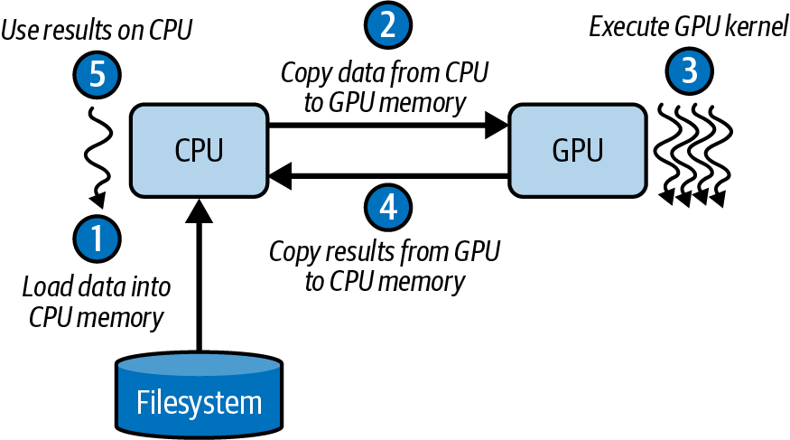
在图示的传统显式复制流程中，host 先把数据载入 CPU memory，再复制到 GPU memory，随后启动 GPU kernel，并在需要 CPU 消费结果时把数据复制回 host。这只是常见基本路径；unified/managed memory、zero-copy、GDS、peer access、异步 copy 和 device-resident pipeline 可能采用不同的数据移动方式。
GPU 主要通过在 warp 之间切换来隐藏 instruction、memory 和部分依赖 latency，而不是用 SM 内并行直接“隐藏”图 6-1 中整段 CPU-GPU transfer。GPU 包含多个 SM；它们与 CPU core 不能一一类比。对书中讨论的 Blackwell compute capability，单 SM 的最大 resident warp 数可为 64，每 warp 32 个 thread；具体限制应以目标 device attribute 和 tuning guide 为准。
每块 GPU 包含多个 SM，每个 SM 管理 warp scheduler、execution pipeline、register file、shared memory/L1 等资源。原文给出 Blackwell 每 SM 最多 64 个 resident warp（2,048 thread）、64K 个 32-bit register（256 KiB），以及合计 256 KiB 的 L1/shared-memory SRAM；其中最多约 228 KiB 可配置为 shared memory，单 block 可用动态 shared memory 约 227 KiB。此类上限依具体 architecture、SKU、carveout、static allocation 和 opt-in API 而定，不能把所有 Blackwell 或“现代 GPU”视为完全相同。
Blackwell SM 包含多个 warp scheduler/processing block，可从 ready warp 向相应 execution pipeline 发出指令。原文把它概括为四个独立 scheduler 每 cycle 最多各选择一个 warp，并进一步断言每个 scheduler 可从同一 warp dual-issue 一条 arithmetic 与一条 memory instruction。具体 issue width、配对和 pipeline mapping 属于 architecture-dependent 微架构细节，CUDA programming model 不保证所有指令组合或每 cycle 都能如此发射。
在有足够 ready warp、无 dependency/structural hazard 且指令组合可发射的理想条件下，多个 scheduler partition 可以并行推进 warp。图 6-2 是概念示意，不应把“发出指令”直接等同于四个 warp 的全部 thread 在同一 cycle 完成执行。
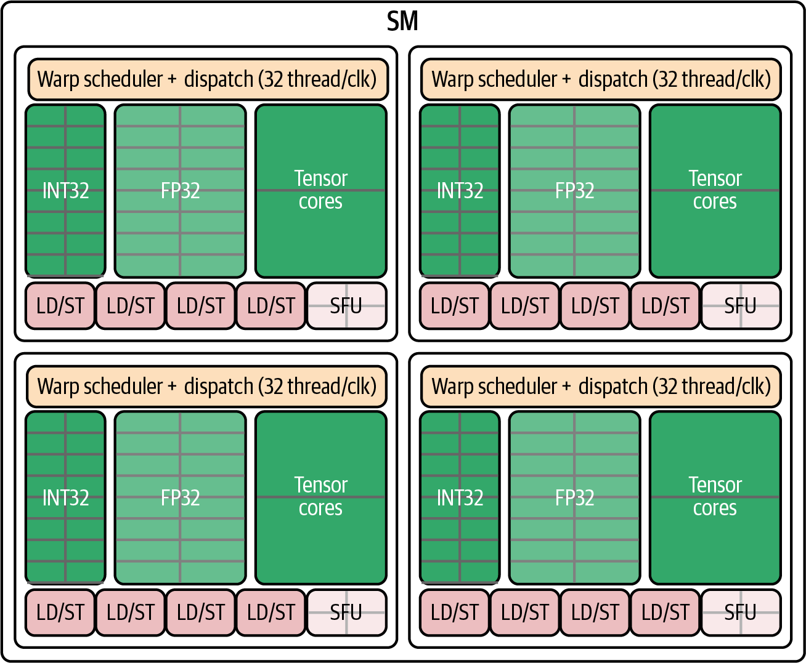
图中把 SM 画成四个 scheduling partition，每个包含 warp scheduler 与 dispatch logic，并共享部分 on-chip resource。“四个 mini-SM”只是帮助理解的比喻；实际 register、cache/shared memory、execution unit 和 crossbar 的归属及共享方式依架构而定。
所谓 dual-issue，是特定独立指令在满足配对规则时可由相应 dispatch path 同 cycle 发出。原文固定写成同一 warp 的一条 INT32/FP32/Tensor Core arithmetic 加一条 load/store，并不是 CUDA 对所有 Blackwell 指令的通用保证。表 6-1 保留原书的概念数字，但实际行为应由 architecture documentation 与 profiler counter 验证。
| 指标 | 概念值 |
|---|---|
| scheduler 数量 | 4 |
| 最大发射 warp 数 | 4（每 scheduler 1 个） |
| 最大 math instruction issue 数 | 4（每 scheduler 一个 arithmetic issue） |
| 最大 memory instruction issue 数 | 4（每 scheduler 一个 load/store issue） |
注意：所有指标表中的数字均用于说明概念。不同 GPU 架构的实际 benchmark 结果见本书 GitHub 仓库；微架构上限仍应以 NVIDIA 官方文档与目标设备实测为准。
在原表的理想化模型中，四个 partition 可合计发出四条 math 与四条 memory instruction。但达到 issue 上限不代表同时达到 compute 与 memory 峰值：instruction latency、execution width、operand collector、dependency、cache miss、memory transaction 和 pipeline contention 都会限制吞吐。该模型来自 SM 的多 partition 组织方式，只能作为分析起点。
Special Function Unit（SFU）执行部分 transcendental/approximate operation，例如 reciprocal、square root，以及由编译器/library 映射的部分 sine/cosine 路径。具体指令可能由 SFU、multi-instruction sequence 或 library 实现；不能把所有这些数学函数都固定映射到同一独立 pipeline。
SFU 与其他 execution resource 的并行性可以增加 instruction-level parallelism，但 dependency、scheduler issue、operand 和 shared resource 仍可能让复杂数学操作位于关键路径。“独立 pipeline”不意味着主 math/memory 指令永远无需等待，也不保证 mixed-operation kernel 自动加速。
当存在足够独立 ready work 时，多个 scheduler 可让多个 warp 在同一 cycle 取得进展。原文进一步给出每 SM 合计 16 条 LD/ST pipeline、每 scheduler 4 条的固定数字；这类 unit count、吞吐与 pairing 不属于 CUDA programming model 保证，且 load/store instruction 会经过 address generation、coalescing、cache 与 memory hierarchy，不能由 pipeline 数直接推导 transaction throughput。
LD/ST unit 数量、issue pairing 与吞吐不受跨架构保证。应使用 profiler counter 判断 kernel 是否受 memory issue、dependency、cache/memory bandwidth 或 compute 限制，并查阅目标架构的 NVIDIA 文档；可从 Blackwell tuning guide 开始。
概括而言，GPU 擅长具有大量并行工作和足够算术/内存并发度的 workload，例如矩阵乘、卷积及许多 elementwise/reduction 操作。开发者可以直接编写 CUDA C++ kernel，也可通过 PyTorch 等框架或 OpenAI Triton 等 domain-specific GPU language 间接生成 kernel。
在深入 kernel 开发和 memory-access 优化之前，先回顾 CUDA thread hierarchy 及支撑这些实践的关键术语。
CUDA 把并行工作组织为thread、thread block（也称 cooperative thread array，CTA）和 grid 层级。每个 logical thread 执行 kernel program 的一个实例；thread 组成 block，kernel launch 的所有 block 构成 grid。许多现代 NVIDIA GPU 的单 block 上限为 1,024 个 thread，但还受每维上限、register/shared memory 和目标 device attribute 限制，如图 6-3 所示。
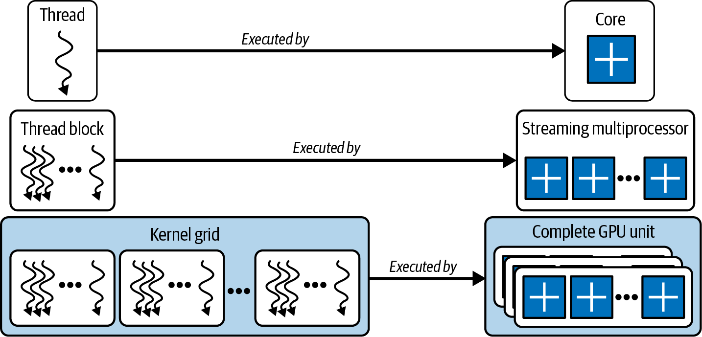
通过设置足够大的 grid，同一 kernel 逻辑可以覆盖大量 logical thread。CUDA runtime 把 block 调度到可用 SM；PyTorch 等 framework 通常生成并启动相应 kernel，但并不直接规定每个 block 的硬件调度顺序。图 6-4 从另一角度展示 thread hierarchy，包括发起 device kernel 的 CPU host。
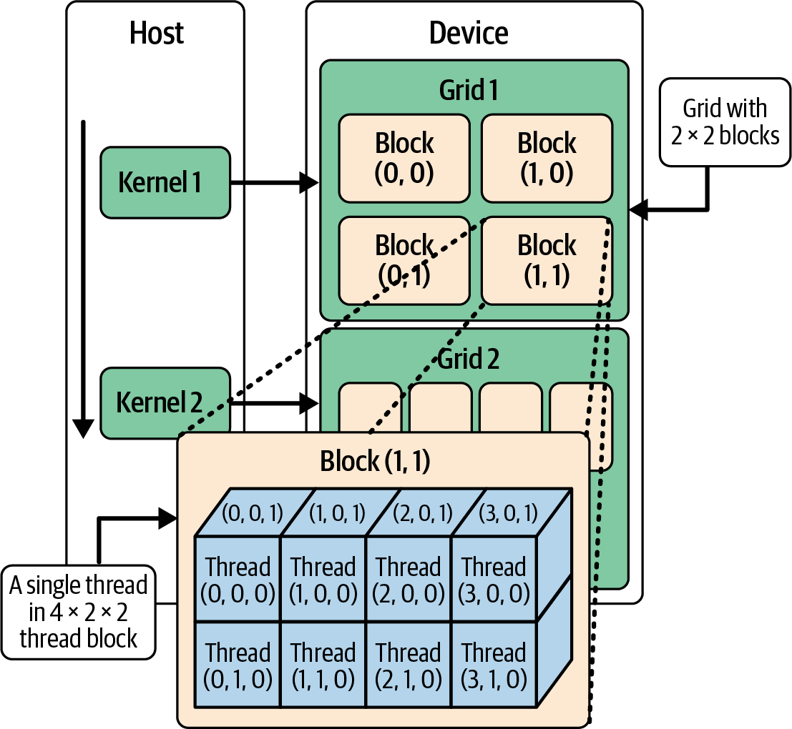
经典 CUDA programming model 中，不同 block 必须可独立执行，不能依赖普通 block 间同步。Hopper 及后续受支持架构引入 thread block cluster：同一 cluster 的 block 会被协同调度到同一 GPU Processing Cluster 范围，并可使用 cluster-scoped synchronization 与 distributed shared memory。它不是所有“现代 GPU”的通用能力。
在 thread block cluster 内，一个 block 可通过 cluster address mapping 访问其他 block 的 shared memory，并使用 cluster barrier。DSMEM 为 cluster 中各 block 的 shared-memory segment 提供分布式地址空间，可支持跨 block tile、histogram 或部分矩阵算法；是否有利取决于访问模式、cluster size 与 occupancy，如图 6-5。
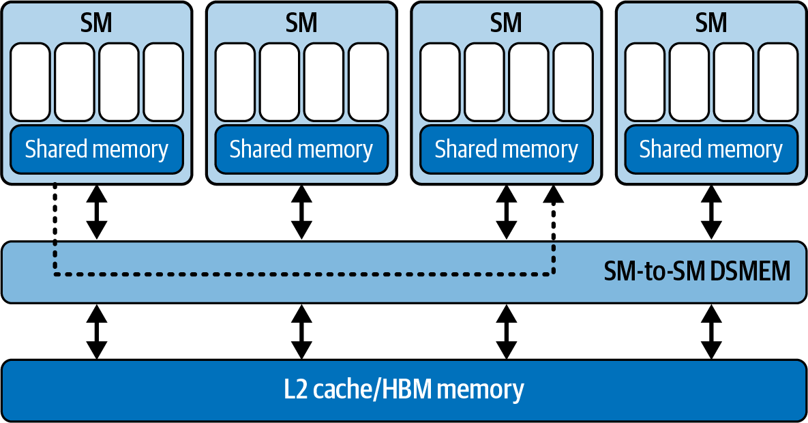
DSMEM 通过片上互连让 cluster 内 block 访问彼此的 shared-memory segment，并支持相应 read、write 和 atomic operation。它不是把“所有 SM 的 bank”合并成均匀共享池：cluster 只覆盖被协同调度的 block，remote DSMEM access 通常比 local shared memory 延迟更高，目标 block 也必须保持存活直到访问完成。它可避免部分 global-memory traffic，但同步与远端访问成本仍需测量。
第 10 章将进一步讨论 thread block cluster 与 DSMEM。本章先聚焦 block 内 shared-memory 优化；使用 cluster 前应确认 compute capability、portable cluster size、launch API 和资源限制。
在一个 thread block 内，thread 可通过低延迟 on-chip shared memory 交换数据，并用 __syncthreads() 建立 block-wide barrier 与 shared/global memory ordering。该 barrier 必须由 block 中所有未退出的 thread 以一致控制流到达，否则可能 hang 或产生未定义行为。只应删除经依赖分析证明冗余的同步，不能单纯因为 barrier 有开销而最小化，如图 6-6。
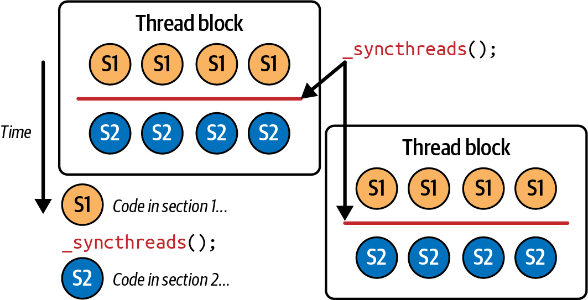
目标是保留 correctness 所需的同步，并消除不必要的 barrier。warp scheduler 可在一个 warp 因 global-memory dependency、cache miss 或 pipeline dependency 无法发射时选择其他 ready warp；这是零开销硬件调度，而不是类似 CPU context switch 的“快速切换”。能否隐藏 latency 取决于 resident warp、独立工作、occupancy 和资源限制。
thread block 会进一步划分为由 32 个 thread 组成的 warp。在 SIMT model 下，warp scheduler 以 warp 为调度单位发射指令；各 active lane 执行同一条 warp instruction，但 independent thread scheduling、predication 和 divergence 会使“lockstep”只是一种简化描述，如图 6-7 所示。
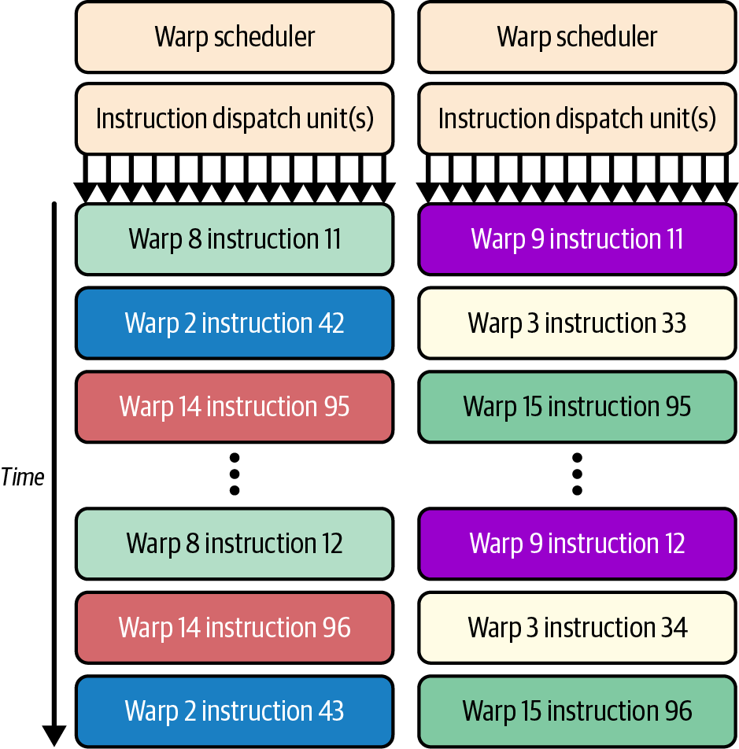
让较多 warp 同时驻留在 SM 上，通常称为 high occupancy（高占用率）。当一个 warp stall 时，较多 resident warp 会提高 scheduler 找到另一个 ready warp 的机会，从而帮助隐藏 latency。不过 occupancy 衡量的是 active warp 相对于硬件上限的比例，并不直接等同于 execution-unit utilization 或较高性能。
因此，occupancy 必须与每个 thread/block 的 register 和 shared-memory 需求一起权衡。register pressure 过高时，compiler 可能把部分值 spill 到 local memory；local memory 位于 device-memory address space，访问会经过 cache/global-memory hierarchy，因而可能引入额外 traffic 与 stall。应结合 achieved occupancy、register/shared-memory usage、stall reason 和实际 throughput 进行 profiling，再选择既不过度压缩每线程资源、也不造成资源争用的 block size。
第 8 章将详细介绍 occupancy tuning；在理解 SM、warp 与 thread 的关系时，应先把 occupancy 视为影响 latency hiding 的一个因素，而不是单独追求的性能目标。
thread block 必须能够彼此独立地执行，且执行顺序没有保证。这让 GPU scheduler 可以把 block 分派到可用 SM，并随 SM 数量扩展并行执行。grid–block–warp hierarchy 为可扩展性提供了 programming-model 基础，但并不保证所有 CUDA kernel 都能在未来 GPU 上原样获得正确性、兼容性或最佳性能；程序仍须遵守同步与内存模型，并受 compute capability、binary/PTX compatibility 和资源上限约束。
throughput 还取决于 warp execution efficiency。对同一 warp 而言，uniform control flow 通常能保持更多 lane 同时有效，而合并良好的 memory access 有助于减少 memory transaction。如果部分 thread 进入 if path、其余 thread 进入 else path，warp 会在不同 path 上分别执行，并屏蔽当前 path 中 inactive lane；这称为 warp divergence，如图 6-8 所示。具体实现还可能使用 predication 和 architecture-specific reconvergence mechanism。
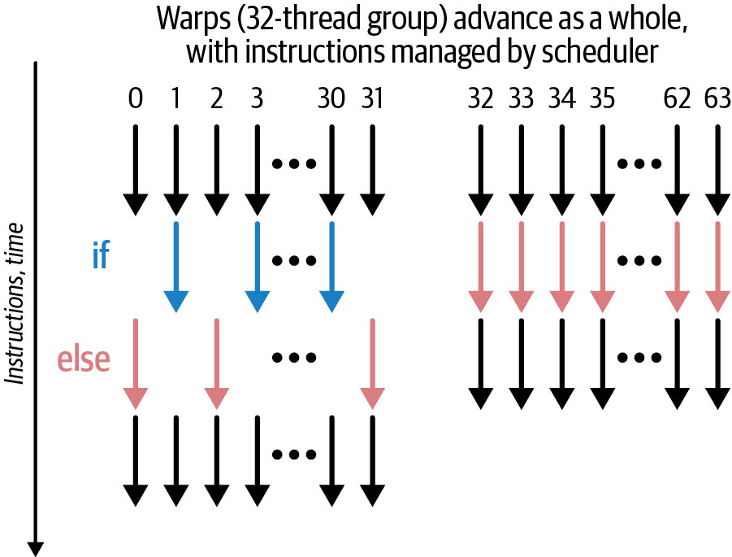
warp divergence 会屏蔽 inactive lane，并为实际采用的 path 执行相应指令，因此会减少 useful lane utilization。其代价并不必然等于 branch 数：它取决于各 path 的指令长度、active mask、predication、memory behavior 与 reconvergence。第 8 章将进一步讨论如何检测、profile 和缓解 warp divergence。
严格意义上的 warp divergence 发生在同一 warp 的 lane 采取不同 control-flow path 时。不同 warp 采取不同 path 不会产生同一 warp 内的 divergence penalty，但仍可能因 path 长度不均、block tail effect、memory access 或资源竞争而降低整体效率。
影响 GPU 性能的一个重要因素，是选择与硬件 32-thread warp 对齐的 thread-block size。因此，通常选用 32 的整数倍。例如，包含 256 个 thread 的 block 正好形成 8 个 warp（256 ÷ 32）；包含 33 个 thread 的 block 则需要两个 warp，第二个 warp 仅有 1/32 的 lane active。后者会降低 lane utilization，因为不完整的 warp 仍占用相应 warp resource；不过最佳 block size 还取决于 register、shared memory、latency、instruction mix 和 workload shape，不能只凭 32 的倍数决定。
不同 GPU generation 还有不同的 hardware limit，包括每 SM 最大 thread 数、每 block 最大 thread 数和 register-file capacity。这些限制会约束可用 block size 和 resident-block 数。大 block 往往消耗更多 block-level resource；但是否发生 register spilling 主要由每 thread register demand、compiler allocation granularity 和 launch constraint 决定，并非 block 较大就必然 spill。
大 block 也可能提高每 block 的 shared-memory allocation，从而减少同一 SM 可同时驻留的 block 数。原文以 Blackwell 为例，给出每 SM 约 228 KB shared memory、单 block 最多约 227 KB usable 的数字；实际可用量取决于具体 GPU、compute capability、L1/shared-memory carveout、static allocation 和 opt-in dynamic-shared-memory setting，应查询目标设备属性。
这些 hardware limit 共同决定一个 SM 上能同时 active 的 block 与 warp 数。occupancy 正是对此类 resident warp 比例的度量。较小 block 有时能让更多 block 驻留并改善 latency hiding，但也可能形成不完整 warp、减少每 block 可协作的 thread，或受到 active-block 上限约束；因此并不保证 occupancy 或 throughput 更高。
调优时需要了解目标 GPU 上 thread、thread block、warp 和 SM 的数量级及限制。图 6-9 以 Blackwell GPU 为例展示这些资源的相对层级和原书列出的上限。
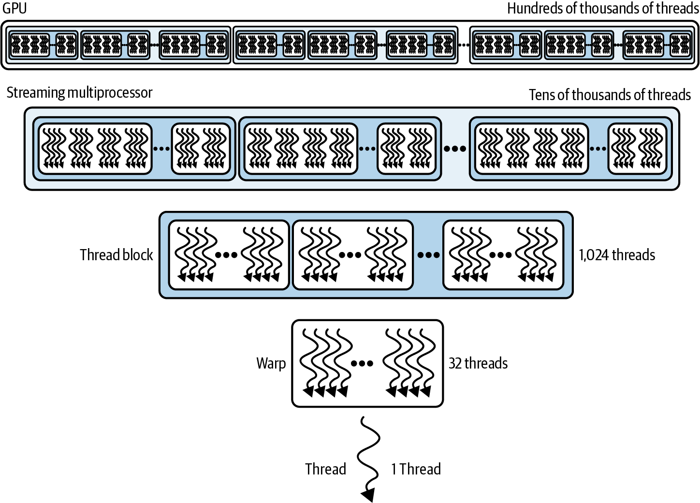
表 6-2 汇总了原书为 Blackwell B200 列出的部分 GPU limit。其他限制可参阅 NVIDIA 网站。不同 generation、SKU 和 compute capability 可能不同，应用还应在运行时查询目标系统的 device attribute。
| 资源 | 硬件上限 | 说明 |
|---|---|---|
| warp size | 32 个 thread | warp 包含 32 个 thread，是 SIMT execution 的基本调度粒度。 通常选择 32 的倍数以避免不完整 warp，但最终 block size 应由 profiling 决定。 |
| 每个 thread block 的最大 thread 数 | 1,024 个 thread | blockDim.x * blockDim.y * blockDim.z ≤ 1024. |
| 每个 thread block 的最大 warp 数 | 32 个 warp | 1,024 个 thread ÷ 每 warp 32 个 thread = 每 block 最多 32 个 warp。 |
32-thread warp size 使 32 的倍数通常成为 block dimension 的合理起点，从而形成完整 warp。表中每 block 最多 1,024 个 thread，因此最多对应 32 个 warp。block 一旦驻留，SM 的 warp、thread、block、register 和 shared-memory 上限会共同决定还能容纳多少 block，进而限制 occupancy。
不同 GPU generation 还具有 per-SM limit，通常称为 SM-resident limit。表 6-3 汇总了原书给出的 Blackwell B200 数值；这些数值须按具体 device specification 验证。
| 资源（每 SM） | 硬件上限 | 说明 |
|---|---|---|
| 每 SM 最大 resident warp 数 | 64 个 warp | 原书给出的硬件上限为 64 个 resident warp（64 × 32 = 2,048 个 thread）。 注意：多个近期架构采用这一上限，但它不是 CUDA 对所有 generation 的永久保证。 |
| 每 SM 最大 resident thread 数 | 2,048 个 thread | 等于 64 个 warp × 每 warp 32 个 thread。若每 block 使用 1,024 个 thread，仅按 thread 上限计算，一个 SM 最多可驻留两个此类 block；register、shared memory 等约束可能使实际数量更低。 使用较小 block（例如 256 个 thread）可能允许更多 block 驻留；只按 thread 上限计算，最多为 8 × 256 = 2,048 个 thread。这可能提高 occupancy 并帮助隐藏 latency，但 active-block limit、资源分配和 workload 粒度仍会约束实际结果。 |
| 每 SM 最大 active block 数 | 32 个 block | 原书列出的上限为一个 SM 同时驻留 32 个 thread block；只有足够小且其他资源约束允许时才可能达到。 |
按原书给出的 Blackwell 上限，每 SM 最多有 64 个 concurrent resident warp、32 个 active block 和 2,048 个 resident thread。这三项是彼此独立的上限，不能由其中一项简单“对应”推出另一项；实际 residency 取所有 thread/register/shared-memory/block constraint 中最严格者。CUDA grid 的各维也有上限，如表 6-4 所示。
| 网格维度 | 上限 | 说明 |
|---|---|---|
| X、Y 或 Z 维的最大 block 数 | X：2,147,483,647 个 block Y：65,535 个 block Z：65,535 个 block |
表中理论 3D dimension 上限为 2,147,483,647 × 65,535 × 65,535 个 block；实际 launch 还受参数范围、workload 和运行资源约束。 |
| 最大 concurrent grid（kernel）数 | 128 个 grid | 原书列出单 device 最多并发执行 128 个 kernel。该上限依架构而定，且表示 kernel 可并发取得执行进展，并非 128 个完整 grid 的所有 block 同时 resident。 |
了解理论 grid limit 很有用，但 performance 通常更早受到每 block/per-SM resource、memory traffic 和可用 parallel work 的限制。原文称“单维超过 65,535 个 block”就应改用 2D/3D grid 或 multiple launch，这只适用于 Y/Z 上限或旧式限制的语境；对表中所述现代 CUDA device，X 维本身可达到 2,147,483,647。需要跨维映射或超出合法 dimension 时，可采用 2D/3D grid、grid-stride loop 或 multiple kernel launch，且必须使用足够宽的 index arithmetic 防止 overflow。
CUDA 的重要优势之一，是其跨 GPU generation 的 compatibility model。若 binary 中包含目标 GPU driver 能够 JIT 的 PTX，今天编译的 kernel 通常可以在未来受支持的 GPU 上重新生成 machine code。若只发布单一 architecture 的 SASS/cubin，例如 Hopper 的 sm_90 或 Blackwell 的 sm_100，而不包含合适的 PTX，则不能据此保证在更新 architecture 上运行。family-specific target（如 sm_100f 或 compute_100f）只承诺在相应 architecture family 范围内兼容；architecture-specific feature 的范围可能更窄。实践中通常发布 fat binary：为已知目标包含相应 cubin，并包含适当 virtual architecture 的 PTX 作为未来 GPU 的 JIT fallback；具体 target 组合应由 CUDA Toolkit 文档和部署矩阵确定。
可以设置 CUDA_FORCE_PTX_JIT=1，在 load 时忽略 embedded cubin 并强制 driver 从 embedded PTX 进行 JIT，以测试是否存在可用的 PTX fallback；生成结果通常会进入 compute cache。若应用所需 kernel 没有可 JIT 的 PTX，load 或 launch 可能失败，表明需要用合适 target 重新构建。不过测试通过只证明当前 driver/GPU 能 JIT 所含 PTX，并不自动证明所有未来 driver、feature 或 dependency 都兼容。cubin 与 PTX 的组合让同一 codebase 可以覆盖多个 legacy 和新 GPU，但仍需分别构建、测试并满足 driver/toolkit compatibility。
在 CUDA C++ 中，可通过编写 kernel 定义并行工作。kernel 是用 __global__ 标注、由 host 调用并在 GPU device 上执行的特殊函数。CPU host code 使用 <<< >>> （chevron syntax）指定 launch configuration。本例使用 blocksPerGrid 表示 grid 中的 thread-block 数，使用 threadsPerBlock 表示每个 block 的 thread 数；完整 configuration 还可包含 dynamic shared-memory byte 数和 stream。
下面的简单示例展示 CUDA kernel 与 kernel launch 的主要组成部分。该 kernel 原地把 input array 的每个元素乘以 2，因此不另行分配 output array。CUDA toolchain 会把 __global__ 函数编译为 GPU device code；launch 创建由许多 logical thread 组成的 grid，每个 thread 执行该 kernel 的一个实例：
//-------------------------------------------------------// Kernel: myKernel running on the device (GPU)// - input : device pointer to float array of length N// - N : total number of elements in the input//-------------------------------------------------------__global__voidmyKernel(float*input,intN){// Compute a unique global thread indexintidx=blockIdx.x*blockDim.x+threadIdx.x;// Only process valid elementsif(idx<N){input[idx]*=2.0f;}}// This code runs on the host (CPU)intmain(){// 1) Problem size: one million floatsconstintN=1'000'000;float*h_input=nullptr;float*d_input=nullptr;// 1) Allocate input float array of size N on hostcudaMallocHost(&h_input,N*sizeof(float));// 2) Initialize host data (for example, all ones)for(inti=0;i<N;++i){h_input[i]=1.0f;}// 3) Allocate device memory for input on the devicecudaMalloc(&d_input,N*sizeof(float));// 4) Copy data from the host to the devicecudaMemcpy(d_input,h_input,N*sizeof(float),cudaMemcpyHostToDevice);// 5) Choose kernel launch parameters// Number of threads per block (multiple of 32)constintthreadsPerBlock=256;// Number of blocks per grid (3,907 for N = 1000000)constintblocksPerGrid=(N+threadsPerBlock-1)/threadsPerBlock;// 6) Launch myKernel across blocksPerGrid blocks// Each block has threadsPerBlock number of threads// Pass a reference to the d_input device arraymyKernel<<<blocksPerGrid,threadsPerBlock>>>(d_input,N);// 7) Wait for the kernel to finish running on devicecudaDeviceSynchronize();// 8) When finished, copy the results// (stored in d_input) from the device back to// host (stored in h_input)cudaMemcpy(h_input,d_input,N*sizeof(float),cudaMemcpyDeviceToHost);// Cleanup: Free memory on the device and hostcudaFree(d_input);cudaFreeHost(h_input);// return 0 for success!return0;
这段代码并未充分优化，后续章节会逐步讨论性能优化；这里先把它作为一个简单而完整的 CUDA kernel 模板。生产代码还应检查 allocation、copy、launch 和 synchronization API 的返回状态。
launch 时向 kernel 传入 d_input 和 N。每个 logical thread 都能读取这些参数，但通过计算不同 index 处理不同元素，从而并行划分工作。
该示例的数据流如下：
在 host 上分配 pinned memory（h_input）。
使用 cudaMemcpy 和 cudaMemcpyHostToDevice，将数据从 host（h_input）复制到 device（d_input）。
在 device 上启动 kernel，传入 d_input。
执行同步，等待 kernel 在 device 上完成，并取得异步执行错误。
使用 cudaMemcpy 和 cudaMemcpyDeviceToHost，把结果从 device（d_input）复制回 host（h_input）。
分别使用 cudaFree 和 cudaFreeHost 释放 device memory 与 pinned host memory。
launch kernel 时还可指定其他 CUDA configuration field，使用 <<< >>> 的完整形式包括 grid dimension、block dimension、dynamic shared-memory size 和 stream。本例的 blocksPerGrid 与 threadsPerBlock 对应前两个字段，也是后续小节重点讨论的 launch parameter。
为什么还要传入 input array 的长度 N？裸 device pointer 不携带 array length metadata，kernel 无法从 d_input 自行推断 allocation 的 logical element count。所有 thread 接收同一个 N，并用它判断各自计算出的 index 是否位于整个 array 的合法范围；它不是某一个 kernel instance 所处理“partition”的大小。
kernel 使用 built-in variable blockDim、blockIdx 和 threadIdx 计算 input array 中的 idx。这些变量都是三维值；本例只使用其 x component，通过 blockIdx.x * blockDim.x + threadIdx.x 为每个 launched thread 生成 linear index。若 grid 足够大且 index mapping 正确，各有效 thread 可以处理一个不同元素；block 实际分布到多少 SM 以及是否同时执行由 scheduler 和资源决定。
请注意 bounds check if (idx < N)。由于 N 可能不是 block size 的整数倍，向上取整的 grid 会启动若干 index 超出 array 范围的 thread。例如 input array 含 63 个元素，即 N = 63，若本例按 64 个 thread 覆盖它，就会形成两个 warp。
第一个 warp 的 lane 对应 index 0–31；第二个 warp 对应 index 32–63。合法 array index 为 0–62，因此第二个 warp 的最后一个 lane 不执行乘法。warp 不会在“到达 N = 63”时整体停止，而是由每个 lane 对 predicate 求值，并在不满足条件时保持 inactive。
若没有 if (idx < N) bounds check，第二个 warp 会让最后一个 lane 尝试访问 idx = 63，而不是原文所写的 64。这是 one-past-the-end access，可能导致 memory-checking tool 报错或 kernel fault（例如后续 API 返回 cudaErrorIllegalAddress），也可能表现为未定义的数据破坏；越界访问不保证每次都立即产生可见错误。bounds check 使有效 index 执行操作，越界 lane 跳过该代码块。
CUDA kernel launch 通常相对于 host 异步执行，device code 也不提供常规的 per-thread C++ exception propagation。launch-configuration error 可在 launch 后较早取得，而 execution fault 常在 synchronization 或后续同步性 CUDA API 处才报告，例如 cudaErrorIllegalAddress 或 unspecified launch failure。具体 fault handling 依错误类型而定，不能统一概括为每次非法操作都设置一个应用可见的“global fault flag”。
调试时通常在 launch 后调用 cudaGetLastError() 检查 launch error，再用 cudaDeviceSynchronize() 暴露 execution error，从而把错误定位到相邻 launch。生产 hot path 不应无条件在每次 launch 后进行 device-wide synchronization，因为这会破坏异步执行与 overlap；应检查 API return status，并在既有 dependency、event 或必要 synchronization point 处处理错误。
许多 CUDA kernel 都包含 bounds check。若没有显式检查，应确认 launch dimension、padding、tile mapping、grid-stride loop 或调用方 invariant 如何保证每次 memory access 都有效，而不能仅假定越界会被硬件安全忽略。
最后是 kernel 的实际计算逻辑。thread 计算 input array 中的 idx 后，把 idx 位置的值乘以 2，并原地写回。该 kernel 不分配额外的 device buffer；局部变量 idx 的类型为 int，物理存放位置由 compiler 决定，通常可驻留 register，但不能由 C++ source 单独保证。示例启动大量 logical thread，实际并发程度和 SM 分布由硬件资源与 scheduler 决定。
如前所述，选择 warp size（32）的整数倍通常可以避免不完整 warp。将 threadsPerBlock 设为 256（8 个 warp）是常见的初始测试点，可在许多 kernel 中兼顾 occupancy 和 resource usage；但它不会自动隐藏 latency 或平衡 SM，最终选择必须结合 kernel resource、problem size 和 profiler 数据：
选择 32 的整数倍作为 block size，有助于避免最后一个 warp 只有部分 lane active。若 block size 不是整数倍，不完整 warp 的 inactive lane 不贡献 useful work，但 warp 仍消耗相应 execution/resource capacity。
足够多的 resident ready warp 可以帮助隐藏 DRAM、instruction 和 dependency latency，但所需数量依 kernel 而定。若某 SM 的 thread 上限为 2,048，仅按 thread 数计算，它最多可容纳 8 个各含 256 thread 的 block；实际 residency 还可能受 register、shared memory 和 active-block limit 限制，runtime 也不会让应用直接指定某个 SM 驻留哪 8 个 block。
例如，256 个 threadsPerBlock 对应每 block 8 个 warp。它经常能提供合理 occupancy，但是否耗尽 register 或 shared memory 取决于每 thread register 数和每 block shared-memory allocation，不能由 block size 单独判断。
在 Blackwell 等现代 GPU 上，可把每 block 256 个 thread 作为候选起点，并与 128、512 等值比较。512 不保证最大 occupancy；应使用 occupancy API/calculator 和 profiler，在 register、shared-memory、latency hiding 与实际 throughput 之间选择工作点。
256 明显低于许多现代 NVIDIA GPU 每 block 1,024 个 thread 的上限，同时提供 8 个 warp。ready warp 是否充足仍取决于每 SM resident block 数、dependency 和 instruction/memory behavior，而不是单个 block 较大就能保证。
可以从 threadsPerBlock=256 开始，根据 kernel 的 register/shared-memory requirement、achieved occupancy、stall reason 和 throughput，向下或向上测试 128、512 等值。
blocksPerGrid 可由 input element 数 N 和 threadsPerBlock 计算。常见 ceiling division 写法是令 blocksPerGrid 等于 (N + threadsPerBlock - 1) / threadsPerBlock，使 N 不是 block size 整数倍时仍有 thread 覆盖最后一批元素。该公式要求正的 threadsPerBlock、足够宽且不会在加法中溢出的 integer type，并且结果不超过目标 device 的 grid limit；若 N 为 0，通常应跳过 kernel launch。示例代码如下：
//-------------------------------------------------------// Kernel: myKernel running on the device (GPU)// - input : device pointer to float array of length N// - N : total number of elements in the input//-------------------------------------------------------__global__voidmyKernel(float*input,intN){// Compute a unique global thread indexintidx=blockIdx.x*blockDim.x+threadIdx.x;// Only process valid elementsif(idx<N){input[idx]*=2.0f;}}// This code runs on the host (CPU)intmain(){// 1) Problem size: one million floatsconstintN=1'000'000;float*h_input=nullptr;cudaMallocHost(&h_input,N*sizeof(float));// Initialize host data (for example, all ones)for(inti=0;i<N;++i){h_input[i]=1.0f;}// Allocate device memory for input on the device (d_)float*d_input=nullptr;cudaMalloc(&d_input,N*sizeof(float));// Copy data from the host to the device using cudaMemcpyHostToDevicecudaMemcpy(d_input,h_input,N*sizeof(float),cudaMemcpyHostToDevice);// 2) Tune launch parametersconstintthreadsPerBlock=256;// multiple of 32constintblocksPerGrid=(N+threadsPerBlock-1)/threadsPerBlock;// 3,907, in this case// Launch myKernel across blocksPerGrid number of blocks// Each block has threadsPerBlock number of threads// Pass a reference to the d_input device arraymyKernel<<<blocksPerGrid,threadsPerBlock>>>(d_input,N);// Wait for the kernel to finish running on the devicecudaDeviceSynchronize();// When finished, copy results (stored in d_input) from device to host// (stored in h_input) using cudaMemcpyDeviceToHostcudaMemcpy(h_input,d_input,N*sizeof(float),cudaMemcpyDeviceToHost);// Cleanup: Free memory on the device and hostcudaFree(d_input);cudaFreeHost(h_input);return0;// return 0 for success!
该 kernel 与前例相同，但会根据 N 的大小计算 blocksPerGrid 和 threadsPerBlock。熟悉的 if (idx < N) bounds check 让最后一个 block 中 index 超出 N 的 lane 跳过 memory access，从而避免本例中的越界访问。接下来讨论 image 和 volume 等 2D/3D input。
当 input data 具有自然的二维逻辑结构时，例如 image，可以启动由 2D block 组成的 2D grid。下面的 kernel 用 16 × 16、共 256 个 thread 的 block 处理一个逻辑尺寸为 1,024 × 1,024 的 matrix。底层 allocation 仍是线性 float buffer，kernel 显式将二维坐标转换为 row-major linear index：
// 2d_kernel.cu#include<cuda_runtime.h>#include<iostream>//-------------------------------------------------------// Kernel: my2DKernel running on the device (GPU)// - input : device pointer to float array of size width×height// - width : number of columns// - height : number of rows//-------------------------------------------------------__global__voidmy2DKernel(float*input,intwidth,intheight){// Compute 2D thread coordinatesintx=blockIdx.x*blockDim.x+threadIdx.x;inty=blockIdx.y*blockDim.y+threadIdx.y;// Only process valid pixelsif(x<width&&y<height){intidx=y*width+x;input[idx]*=2.0f;}}intmain(){// Image dimensionsconstintwidth=1024;constintheight=1024;constintN=width*height;// 1) Allocate and initialize host imagefloat*h_image=nullptr;cudaMallocHost(&h_image,N*sizeof(float));for(inti=0;i<N;++i){h_image[i]=1.0f;// e.g., initialize all pixels to 1.0f}// 2) Allocate device image and copy data to devicecudaStream_ts;cudaStreamCreateWithFlags(&s,cudaStreamNonBlocking);float*d_image=nullptr;cudaMallocAsync(&d_image,N*sizeof(float),s);cudaMemcpyAsync(d_image,h_image,N*sizeof(float),cudaMemcpyHostToDevice,s);// 3) Configure and launch the 2D kerneldim3threadsPerBlock2D(16,16);// 256 threads per blockdim3blocksPerGrid2D((width+threadsPerBlock2D.x-1)/threadsPerBlock2D.x,(height+threadsPerBlock2D.y-1)/threadsPerBlock2D.y);// 4) Launch the kernelmy2DKernel<<<blocksPerGrid2D,threadsPerBlock2D,0,s>>>(d_image,width,height);cudaMemcpyAsync(h_image,d_image,N*sizeof(float),cudaMemcpyDeviceToHost,s);cudaStreamSynchronize(s);cudaFreeAsync(d_image,s);cudaStreamDestroy(s);
以上仍给出了完整的 device kernel 和 host invocation code。可以为 blocksPerGrid 与 threadsPerBlock 使用 dim3(x, y, z)，把 logical thread coordinate 推广到 3D；但 volumetric data 的实际地址仍需根据 width、height、depth 及 layout/stride 显式计算。使用 pitched allocation 时还必须按 pitch/slice pitch 寻址，并确保 dimension product 和 linear index 不发生 integer overflow。
前例使用的传统 cudaMalloc/cudaFree 是 host-side allocation API，调用成本可能较高，并可能引入 device synchronization 或 driver/OS memory-management work。原文以 mmap/ioctl 概括内部实现只是示意；具体系统调用、缓存与同步行为依 CUDA、driver 和平台而定。
driver 与 OS interaction 可能产生 kernel-space transition 和管理开销，因此频繁细粒度 allocation 往往代价明显。对于生命周期可按 stream 排序、且平台支持的 workload，可考虑 cudaMallocAsync 和 cudaFreeAsync；它们通过 pool 与 stream-ordering 减少重复分配和全局同步，但并非所有一次性或低频 allocation 都一定更快。
CUDA runtime 为支持的 device 维护默认 per-device memory pool，也可创建和设置显式 pool。stream-ordered free 完成后，allocation 可回到相应 pool 供后续兼容 allocation 复用。cudaMallocAsync 与 cudaFreeAsync 使用这种 memory-pool mechanism。
memory pool 可复用已释放的 memory block，减少向底层 allocator 重复申请和归还 memory 的次数。在长期 training loop 等重复 allocation pattern 中，这通常降低 allocation latency，并可能缓解某些 external fragmentation；但 pool 自身会保留 reserved memory，也可能出现 size-class/internal fragmentation。许多高性能 library/runtime（包括 PyTorch）都采用 caching 或 pooling allocator。
PyTorch 使用自定义 CUDA caching allocator，可通过 PYTORCH_ALLOC_CONF 配置（旧别名为 PYTORCH_CUDA_ALLOC_CONF）。其思想与 CUDA memory pool 相似：复用 GPU allocation，避免每次创建 tensor 都直接调用 cudaMalloc。具体 backend 可随 PyTorch version/configuration 改变，选项也不能在不同 backend 之间一概而论。
对于频繁、细粒度 allocation，pool-based cudaMallocAsync 与 cudaFreeAsync 通常比反复使用传统 cudaMalloc/cudaFree 更适合，因为 allocation/free 可按 stream 排序并复用 pool。收益取决于 allocation pattern、pool state 和 synchronization，不应假定每次传统调用都必然执行相同的 full-device synchronization 或 OS call。下面创建一个 nonblocking stream：
cudaStream_tstream1;cudaStreamCreateWithFlags(&stream1,cudaStreamNonBlocking);
explicit CUDA stream 可表达 operation ordering，并在 hardware capability、dependency、memory 和 copy-engine 条件允许时重叠 transfer、kernel 与 allocation。stream 不是完全隔离的 channel：它们共享 device resource，并可通过 event/dependency、memory hazard 和 default-stream semantics 交互。使用 cudaStreamCreateWithFlags(..., cudaStreamNonBlocking) 可避免与 legacy default stream 的隐式同步关系，但不会自动产生 overlap。第 11 章将详细讨论 multistream overlap。
需要容纳 N 个 float 的 buffer 时，可在同一 stream 上用 cudaMallocAsync 分配，并在最后一次使用之后 enqueue cudaFreeAsync，如下所示：
float*d_buf=nullptr;cudaMallocAsync(&d_buf,N*sizeof(float),stream1);// ... launch kernels into stream1 that use d_buf ...myKernel<<<blocksPerGrid,threadsPerBlock,0,stream1>>>(d_buf,N);// Free is deferred until all work in stream1 completes—cudaFreeAsync(d_buf,stream1);
这些 API 从 per-device memory pool 分配，并遵循传入 stream 的 ordering；free operation 只有在该 stream 中此前使用完成后才生效。cudaFreeAsync 本身是 enqueue，不是在 host 上等待 stream1 完成，也不隐式执行全局 cudaDeviceSynchronize。如果 pointer 会在其他 stream 使用，应用必须建立正确的 cross-stream dependency；否则同一 stream 的顺序不足以保证 lifetime。对于大量 allocate/free cycle，pool reuse 可降低 allocation overhead 和 latency variance，并减少某些全局同步；相对传统 cudaMalloc/cudaFree 的实际收益和 fragmentation 仍需测量。
还可调整 device memory pool 的行为。例如，cudaMemPoolAttrReleaseThreshold 控制 pool 在 synchronization opportunity 后尝试向 OS 释放 reserved memory 时使用的阈值；它不是严格的 memory cap。也可调用 cudaMemPoolTrimTo 请求把 reserved memory 缩减到给定目标附近。二者用于权衡 retained footprint、后续 allocation latency 和复用机会，而不是直接消除 fragmentation。
对于简单的一次性 buffer，传统 cudaMalloc 和 cudaFree 可能已经足够。对于长期循环中的重复 allocation/free，可评估在适当 stream 上使用 cudaMallocAsync 和 cudaFreeAsync 及其 pool；它通常降低 allocator overhead，但一致性和 throughput 改善取决于 workload 与 pool policy。
在合适的 stream/lifetime model 下，cudaMallocAsync 与 cudaFreeAsync 可以利用 pool 减少重复管理开销。可通过 cudaMemPoolSetAttribute 调整 pool behavior，例如设置 cudaMemPoolAttrReleaseThreshold，以便在 retained memory footprint、allocation latency 与复用率之间选择经测量的工作点，而不是假定某一阈值同时最小化 footprint 和 fragmentation。
到目前为止，我们主要从高层讨论 global-memory allocation。stream-ordered allocation 可来自目标 device 的 current/default memory pool；memory pool 属于 device/allocator 作用域，并不存在一个专属于“default stream 0”的独立 memory pool。
GPU 实际提供多级 memory hierarchy，以不同 capacity、latency、bandwidth 和作用域支持数据访问，包括 register、shared memory、cache、global memory，以及 Blackwell 上特定 Tensor Core path 使用的 TMEM。TMEM 是每 SM 约 256 KB 的 dedicated on-chip tensor memory，供第 5 代 Tensor Core instruction（tcgen05.*）保存 accumulator 等数据；普通 CUDA C++ 不能像 global/shared memory 那样用通用 pointer 直接寻址。TMA 主要负责 global memory 与 SMEM 之间的 multidimensional async transfer，而 TMEM 的分配、访问和 SMEM/TMEM movement 由相应 tcgen05 instruction 与 descriptor/control operand 管理；原文括号也缺少右括号。
global memory（通常为 HBM/DRAM）容量大、位于 chip 外，相对 on-chip storage 延迟更高；register 容量很小、位于 SM 上，通常具有最低访问延迟。L1、L2 与 shared memory 在 scope、capacity 和 access mechanism 上各不相同，不能简单视为一条统一的中间层级。cache 可利用 locality 减少下层访问，shared memory 则由程序显式管理以实现 reuse/cooperation；它们可降低 exposed global-memory latency 和 traffic，但不会自动“隐藏”所有延迟。图 6-10 给出包含 CPU 的高层示意。
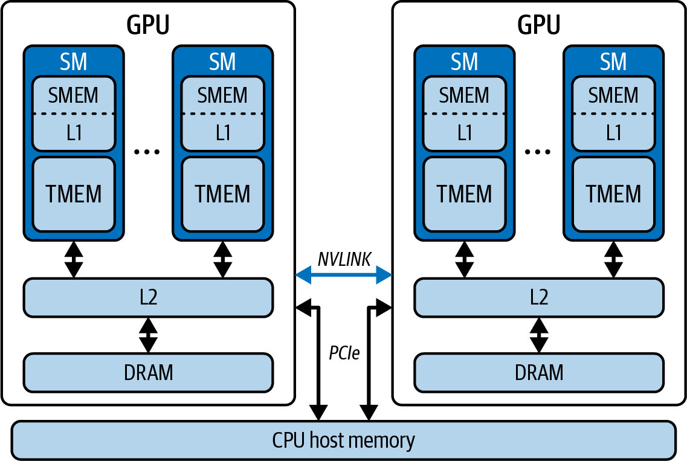
TMEM 是 Blackwell 上每 SM 约 256 KB、与特定 Tensor Core instruction 紧密耦合的 storage。原书给出其与 Tensor Core 之间为每秒数十 TB 的内部带宽口径，但该数值依 instruction、数据布局和统计口径，不能等同于 application 可持续带宽。TMEM 可让 accumulator 等中间值留在片上，减少部分 SMEM/register/global-memory traffic；它不透明地替代整个 global-memory data path。图 6-11 示意 TMEM 与 SMEM 配合 Tensor Core 计算 C = A × B。
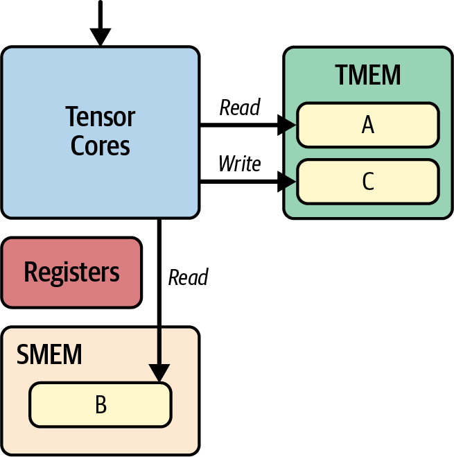
图中把 operand B 画为来自 SMEM，并把 A/accumulator 画在 TMEM；这只是简化示意。对 Blackwell tcgen05 MMA 而言，operand source、descriptor 和 TMEM accumulator layout 取决于具体 instruction form，不能普遍断言 A 预先存于 TMEM。tile 可由 TMA 从 global memory 经 memory hierarchy 搬到 SMEM；高级 API 可使用 cuda::memcpy_async 等抽象，但它与底层 TMA 的映射取决于 architecture、shape、alignment 和 compiler。随后由 UMMA/tcgen05.mma 及相关 data-movement instruction 使用 SMEM/TMEM 数据。
表 6-5 汇总原书给出的 Blackwell memory level 与特征。capacity 中部分是 architecture/device limit，latency/bandwidth 多为近似值或 microbenchmark 口径，会随 SKU、clock、instruction、access pattern、cache state 和 contention 改变，不能视为 CUDA contract。后文再逐层说明。
| 层级 | 作用域 | 容量 | 延迟 | 带宽（近似） |
|---|---|---|---|---|
| register | per thread，物理 register file 位于 SM | 每 SM 64 K 个 32-bit register（每 thread architecture limit 为 255） | 最低层级延迟 （dependency、bank/port conflict 和 instruction scheduling 仍可能产生等待，不能视为“免费”） |
每 SM 数十 TB/s 量级（register-file port 的理论/推导口径） |
| shared memory 与 L1 cache | per SM | 原书列约 228 KB shared（单 block 约 227 KB usable），与 L1/data cache 共享/配置的 SRAM 口径依 device | 约 20–30 cycle（特定 L1/shared microbenchmark） | 每 SM TB/s 量级（bank-conflict-free 的特定访问） |
| TMEM | per SM | 每 SM 约 256 KB，供特定 Tensor Core path 使用 | 原书列约 10 cycle（非通用 CUDA load/store latency） | 与 Tensor Core 通信为 TB/s 量级（依 instruction/口径） |
| constant-memory cache | per SM cache；constant address space 为 device scope | 原书列约 8 KB cache，对应 64 KB __constant__ address space |
同一 warp 访问同一 cached address 时支持 broadcast；“约 1 cycle/等同 register”不是通用保证 不同 address 通常按 distinct address 数序列化 cache miss 则访问下层 memory，并产生更高 latency |
broadcast pattern 下可达高 throughput；依 cache/access pattern |
| L2 cache | device-wide，供所有 SM 共享 | 原书列总计 126 MB；依具体 SKU | 原书列约 200 cycle；依 hit path、clock 与 contention | aggregate multi-TB/s 量级；依访问与 SKU |
| local memory | per-thread address space；物理存储位于 device memory，可由 cache 服务 | 受 address-space、allocation 与 device-memory capacity 限制，并非 near-unlimited | cache hit 到 DRAM miss 的跨度很大；原书列数百至约 1,000 cycle | 受 cache/HBM traffic 与 coalescing 限制，不能直接等同 HBM peak |
| global memory（HBM/DRAM） | 设备范围的片外内存 | 原书列 Blackwell B200 每 GPU 最多约 180 GB 可用口径 （Blackwell B300 每 GPU 最多约 288 GB） | 数百至约 1,000 cycle 的经验范围；依 cache miss、queueing 和 clock | 原书列总计约 8 TB/s；具体 B200/B300 SKU 与口径不同 |
因此，高 throughput kernel 通常要利用 register/shared memory/cache 中的数据 reuse，减少不必要的 off-chip traffic，并保持访问合并和足够并发度。但 register/shared-memory 使用过多会降低 occupancy，cache 由硬件管理且 hit rate 依 workload，local memory 也可能命中 cache；目标不是无条件“最小化”某一层，而是优化 end-to-end data movement。下面逐层展开说明：
在 Blackwell 上，每个 SM 的 register file 包含 64 K 个 32-bit register（合计 256 KB），用于保存各 resident thread 的 scalar value、address 和 compiler temporary；architecture limit 为每 thread 最多 255 个 register。register 是 SM 上的低延迟资源，但实际 allocation 以 warp/CTA 等粒度取整，并由 compiler 与 launch constraint 共同决定。
register file 可提供很高 throughput，但 read/write 并非无条件单 cycle 或“几乎不争用”：dependency、bank/port conflict、operand delivery 和 instruction scheduling 都可能限制性能。当 compiler 无法把所有 live value 放入 register 时，部分值会 spill 到 local-memory address space；其物理 backing 位于 device memory，并可经过 L1/L2，因此 latency 从 cache hit 到 DRAM miss 差异很大，不必然每次都是数百至上千 cycle。图 6-12 示意 per-thread local memory。
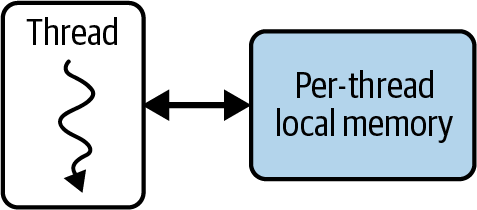
Blackwell 等 architecture 的 L1/texture/shared-memory path 使用每 SM 的 unified on-chip SRAM，原书列出总计 256 KB。应用可用 cudaFuncSetAttribute() 与 cudaFuncAttributePreferredSharedMemoryCarveout 表达 L1/shared carveout 偏好；这通常是 hint，不保证精确 partition。若 kernel 需要超过默认上限的 dynamic shared memory，则应另用对应的 max-dynamic-shared-memory opt-in attribute。原书给出每 SM shared-memory 上限约 228 KB、每 block dynamic shared memory 约 227 KB；实际值、保留量、static+dynamic 合计及 opt-in requirement 都应查询目标 device/function attribute。
原书给出约 20–30 cycle 和每 SM TB/s 量级的 microbenchmark 结果。shared-memory bank conflict、address pattern、instruction width 和 occupancy 会影响 throughput；L1 与 shared memory 的访问机制也不同，不能共用单一 latency 结论。图 6-13 示意 block-scoped shared memory；其 allocation 随 block residency 占用 SM SRAM，并非永久专属于某个 block 的独立物理存储。
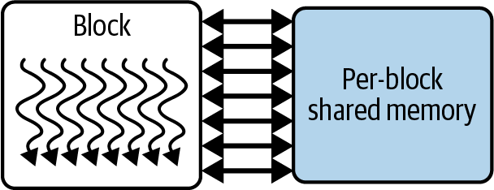
TMEM 是 Blackwell 每 SM 约 256 KB 的 dedicated on-chip tensor memory，供 UMMA 与 tcgen05 等 Tensor Core-specific instruction 使用，第 10 章还会讨论。它不是普通 CUDA C++ pointer-addressable space，而是通过 tcgen05 allocation、load/store/copy 与 MMA instruction 管理。TMA descriptor 主要描述 global↔SMEM transfer，并不会自动管理 global、shared、TMEM 之间的全部数据流。典型 path 可让部分 operand 位于 shared memory、让 accumulator 位于 TMEM，但开发者/library/compiler 仍须明确安排 descriptor、barrier、lifetime 和相应 computation。
对于小型 read-only table，原书列出 Blackwell 每 SM 约 8 KB 的 constant cache，用于缓存 64 KB __constant__ address space。当一个 warp 的 active lane 读取同一 address 时，constant path 可 broadcast 该值；具体 latency 依 cache hit 和 architecture，不应保证为 single cycle。
若同一 warp 读取多个不同 constant address，request 通常按 distinct address 数拆分/序列化。constant memory 可适合小型 lookup table，例如 rotary positional encoding parameter、Attention with Linear Biases（ALiBi）slope、部分 LayerNorm γ/β 或 quantization scale；但是否合适取决于容量和 access uniformity。cache hit 可减少下层 traffic，不能保证所有 thread 的所有访问都完全没有 global/L2 traffic。
L2 cache 位于 SM-local cache 与 off-chip HBM3e 之间，供 device 上各 SM 共享。原书为该 Blackwell configuration 列出 126 MB、约 200 cycle 和每秒数十 TB 的 aggregate bandwidth；这些均依 SKU、clock、partition、hit path 与 contention，不是固定值。
一个 block 取入 L2 的 data 有机会被其他 block 重用，从而避免再次访问 DRAM，但是否命中取决于 eviction、working set、access policy 和 scheduling。global access 应尽量让 warp lane 访问连续、对齐且可合并的数据；实际 memory transaction sector/cache-line 行为依 architecture 与 access width，不能把所有最佳访问固定为单个 128-byte transaction。
让 warp 的 global load/store 尽量连续、自然对齐并可 coalesce，可减少不必要的 sector/transaction；具体 alignment 和 transaction 数应按 element width、active lane 和目标 architecture 检查。128-byte aligned segment 是常见理想模式之一，但不保证完全避免 split，也不自动最大化 L2/DRAM bandwidth。
global memory 的物理 backing 通常是 off-chip HBM/DRAM；local-memory object 和 register spill 也位于 device-memory backing，但访问可命中 L1/L2，不必每次承担完整 DRAM latency。原书给出的数百至上千 cycle 与约 8 TB/s bandwidth 分别是 latency 范围和特定产品 peak 口径，不能据 peak bandwidth 推断单次访问延迟。
原书为 Blackwell B200 列出每 GPU 最多约 180 GB 可用 HBM 和总计约 8 TB/s。具体 capacity/bandwidth 随 B200/B300 SKU 与计量口径不同；应用可达 bandwidth 还受 coalescing、read/write mix、cache、ECC 和 contention 影响。图 6-14 示意 per-device global memory。
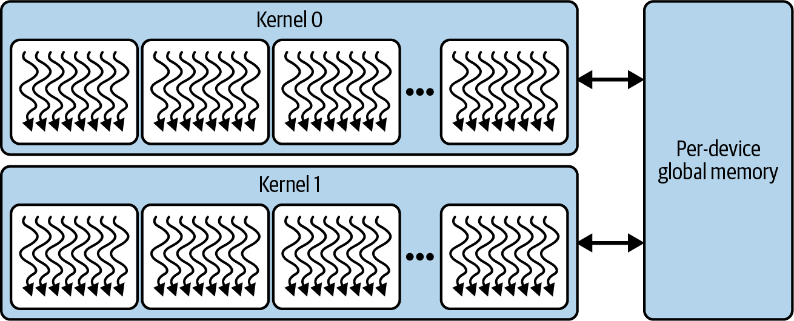
可以使用 Nsight Compute 查看 register spill、memory transaction、cache hit rate、throughput 和 stall metric，以判断 kernel 的实际 data path。profiler 能帮助定位 register、shared/L1、constant cache、L2 与 HBM 的瓶颈，但接近某个 on-chip peak 并非普遍目标，metric 也需要结合 workload phase 和 counter definition 解读。Blackwell 的 L2 与 unified L1/shared SRAM 可支持 reuse 和显式 staging，而 coalescing 主要由 warp address pattern 决定。
Blackwell B200 对 CUDA 程序呈现为单个 GPU 和统一 global address space，但物理上由两个 die 组成，原书列出 die 间约 10 TB/s interconnect，每个 die 连接四个 HBM3e stack。统一寻址和单 GPU programming model 不代表所有跨 die/HBM access 在 latency、bandwidth、contention 上完全 uniform；实际 locality 和 fabric behavior 应用 profiler/microbenchmark 验证。
memory visibility 与 ordering 的有效 scope取决于 memory space、cache/coherence domain、参与者和所用 synchronization primitive。CUDA 提供 thread、thread block（CTA）、受支持的 cluster（CTA cluster）、device 和 system 等 scope，但仅选择 scope 并不能建立 data race-free communication；还需正确的 atomic/fence/barrier 与 happens-before relationship。图 6-15 给出这些 scope 的概念示意。
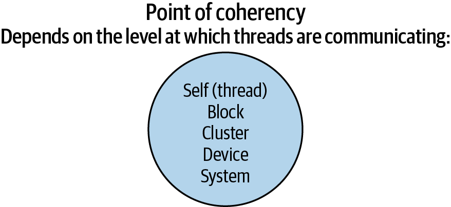
总之，应根据 access pattern、reuse、scope 和 synchronization 选择合适的 memory level，并用 profiler 验证。良好的 locality、合并访问、足够并发度和受控 resource pressure 可减少 exposed latency；但提高 occupancy 与最大化某层使用量并非独立目标，也不保证“fully leverage”硬件。下一节讨论 NVIDIA Unified Memory，并说明它与 Grace Hopper/Grace Blackwell 等 coherent CPU-GPU design 的关系。
Unified Memory（也称 CUDA Managed Memory）为 managed allocation 提供 CPU 与 GPU 可使用的统一虚拟地址，从而减少手工维护 host/device buffer 和显式 cudaMemcpy 的需要。可访问性、page placement、migration 与 hardware coherence 能力依平台而异，不能把统一地址一概等同于所有 CPU/GPU access 的硬件 cache coherence。cudaMallocManaged() 创建的 page 可由 driver 按 access、advice 和 topology 迁移或远程访问，如图 6-16 所示。
Unified Memory 简化了编程，但 on-demand page fault、migration 或 remote access 可能引入难以从 source 直接看出的 latency 与 stall。例如 GPU 访问当前位于 CPU memory 的 managed page 时，driver 可 fault 并迁移 page，或在受支持平台按当前 policy 远程访问；传输互连可能是 PCIe、NVLink 或 NVLink-C2C，并非总是 NVLink-C2C。因此性能高度依赖 hardware topology、OS、driver、page size 和 access pattern。
在 PCIe 或较早的 discrete-GPU system 上，fault-driven migration 常因 fault handling、transfer granularity 和 interconnect bandwidth 而比预先安排的 bulk cudaMemcpy 更慢。Grace Hopper/Grace Blackwell 的 NVLink-C2C 提供最高约 900 GB/s 的双向聚合 coherency interconnect 口径，连接 Grace CPU memory subsystem 与 GPU HBM；CPU 侧不是原文所称 HBM。高互连带宽可降低 data movement 成本，但 page fault、placement 和 remote-access latency 仍与 device-native HBM access 不同。
kernel 执行期间的 managed-memory fault 会阻塞受影响的 access/warp，并可能通过 fault batching、dependency 和 migration 影响更大范围，但不必然让整个 GPU 完全停顿。可在已知下一使用位置时调用 cudaMemPrefetchAsync() 提前请求 placement，如图 6-17 所示。
prefetch 向 driver 请求把指定 range 迁移到目标 location，并按给定 stream 排序；在 hardware/stream/dependency 允许时可以与其他工作 overlap。它并非保证在 kernel launch 前自动完成，调用方仍需建立正确 stream ordering。还可提供 memory advice，如下：
cudaMemAdvise(ptr,size,cudaMemAdviseSetPreferredLocation,gpuId);cudaMemAdvise(ptr,size,cudaMemAdviseSetReadMostly,gpuId);
PreferredLocation 对应 preferred-location advice，提示 allocation 通常应驻留的位置；ReadMostly 表示 data 大多被读取，driver 可在适用平台创建 read-only duplicate。它不是 const correctness 或禁止 write 的保证，write 可能使 replica invalid。图 6-18 给出概念示意。
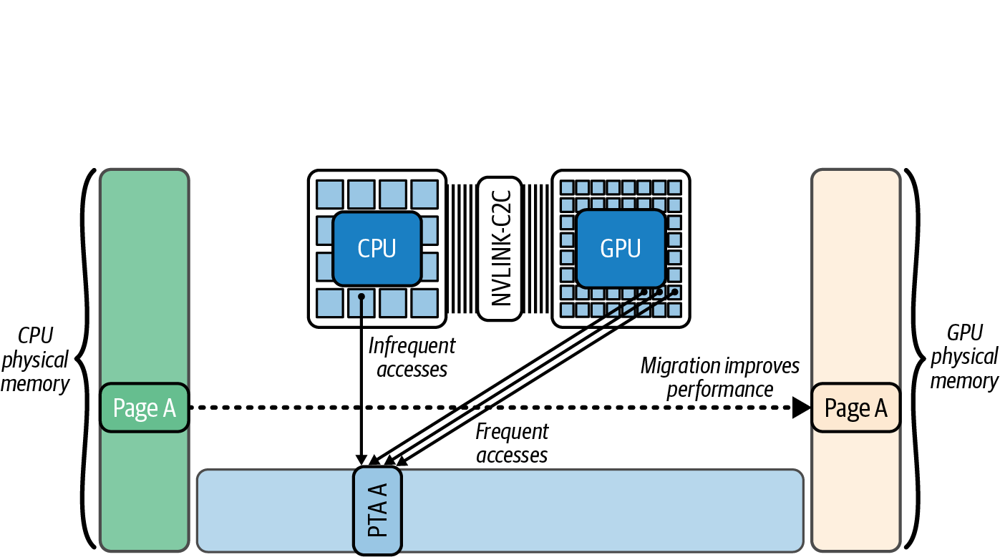
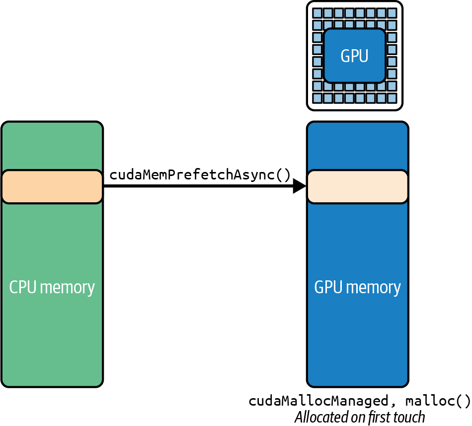
cudaMemPrefetchAsync() 请求经 NVLink-C2C 从 CPU 向 GPU prefetch data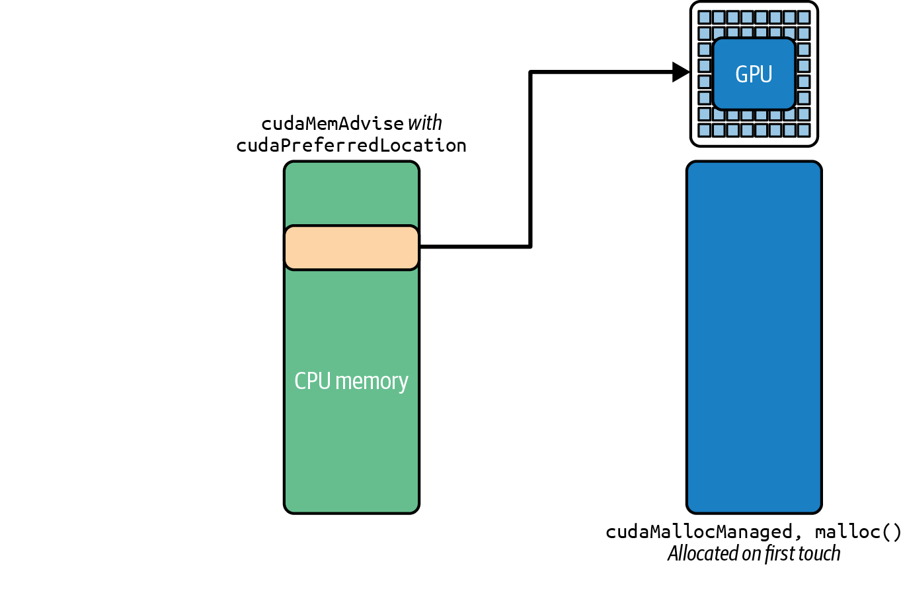
ReadMostly 等 advice 描述预期访问模式还可用以下 advice 告知 driver：另一个 GPU 将访问该 range，以便预先建立必要 mapping、减少首次访问开销；这不保证 page 永不迁移：
cudaMemAdvise(ptr,size,cudaMemAdviseSetAccessedBy,otherGpuId);
managed allocation 的 access 可能触发 page fault、mapping 或 migration，并产生额外 ordering/latency。对于支持 stream attachment 的 managed memory，可把 association 改为 single-stream，以声明只有指定 stream 会访问该 allocation；这是访问约束和 coherency optimization hint，不是通用的 migration-overlap primitive。调用如下：
cudaStreamAttachMemAsync(stream,ptr,0,cudaMemAttachSingle);
使用 cudaMemAttachSingle 后，应用承诺在 association 生效期间仅通过指定 stream 访问 memory；其他 stream/device 的并发访问可能违反 API contract，而不是被安全阻止。该调用按 stream 异步改变 association，但并不保证只有该 stream 能产生 fault、也不自动把 migration 与该 stream 工作 overlap，更不能笼统保证消除 cross-stream synchronization。
在 multi-GPU system 中，可按 topology 使用 cudaMemcpyPeerAsync() 显式复制，或把 managed range prefetch 到特定 device。prefetch 是 placement request，不等于永久 pin，也不存在适用于所有系统的“nearest NUMA-local GPU memory”自动选择；peer access、NVLink/PCIe route、memory capacity 和后续访问仍可能导致 remote access 或 migration。
总之，适当 prefetch 和 memory advice 可以减少 first-touch fault 与不期望的 migration，但不能保证消除大多数 stall。要取得效果，prefetch 必须覆盖正确 range/location、按 dependency 在使用前完成，并避免 CPU/GPU ping-pong；working set 超出 capacity、irregular access 或多 device 写共享仍可能产生 fault 和迁移。
主动 prefetch、合适 advice 与正确 stream association 有时能让 Unified Memory 接近手工 cudaMemcpy 的性能，同时保留统一地址的便利；这不是跨 workload/platform 的保证。应对比 end-to-end time、fault/migration counter、interconnect traffic、capacity pressure 和 correctness，再选择 managed memory、显式 copy 或混合方案。
GPU 可让多个 resident warp同时驻留；一个 warp 因 dependency 无法 issue 时，scheduler 可选择另一个 ready warp，从而隐藏部分 memory/instruction latency。occupancy 是 active warp 数相对于目标 SM architecture maximum 的比例，不是时间利用率、FLOP utilization 或 throughput 本身。
occupancy 很低时，ready warp 不足可能让 SM 在 memory/dependency stall 期间没有指令可发射；但低 occupancy 不必然表示低 SM utilization，例如具有足够 instruction-level parallelism 的 compute-heavy kernel 仍可能表现良好。Blackwell 每 SM 的 64 K register file 是 residency constraint 之一；能否支持更多 warp 且不 spill 取决于每 thread register demand、allocation granularity、block size 和其他资源。
每 thread 最多 255 个 register 是 architecture limit，不是性能目标。应同时查看 theoretical/achieved occupancy、register allocation、spill、eligible warp、stall reason 和 throughput，再调整 block size、launch bound 或 code；单纯压低 register 数可能增加 spill 并降低性能。
较高 occupancy 会增加存在 ready warp 的机会，但不会保证 compute unit busy；所有 warp 可能同时受 memory bandwidth、barrier 或相同 dependency 限制。warp 也不是从 SM 外“swap in”，而是 resident warp 之间进行硬件调度。用其他 ready work 覆盖某个 warp 的等待时间称为 latency hiding。
下面用一个极端示例说明：从单 thread 改为足够多的并行 thread，通常会同时改善 occupancy、device activity 和 throughput。CUDA 优化的基础要求是提供足够 parallel work 覆盖目标 GPU，但并非必须或总能“fully occupy”每项硬件资源。
若 achieved occupancy 很低、性能也差，且 profiler 显示 latency/eligible-warp shortage，可以增加 grid 中的 block、调整 block size 或降低不必要的 resource pressure。目标应是足以隐藏当前 latency 的并行度，而不是机械追求现代 GPU 的 80%–100%；许多高性能 kernel 在更低 occupancy 下达到最佳 throughput。
若 occupancy 已足够，而 kernel 受 memory throughput 限制，继续提高到 100% 通常无益，甚至会因限制 per-thread resource 而变慢。所需 resident warp 数取决于 latency、dependency 和 instruction mix；瓶颈也可能是 memory bandwidth、execution pipeline、serialization 或 synchronization。
为了展示 parallelism 的影响，考虑长度为 N 的 vector addition（C = A + B）。比较两个 kernel：addSequential 与 addParallel。addSequential 只让一个 thread 在 loop 中处理全部 N 个元素；addParallel 则让多个 thread 分担元素。这个对比同时改变了 parallelism、instruction count per thread、memory-level parallelism 和 launch geometry，不能把全部加速仅归因于 occupancy。
sequential version 由一个 GPU thread 串行处理整个 workload：
#include<cuda_runtime.h>constintN=1'000'000;// Single thread does all N additions__global__voidaddSequential(constfloat*A,constfloat*B,float*C,intN){if(blockIdx.x==0&&threadIdx.x==0){for(inti=0;i<N;++i){C[i]=A[i]+B[i];}}}intmain(){// Allocate and initialize hostfloat*h_A=nullptr;float*h_B=nullptr;float*h_C=nullptr;cudaMallocHost(&h_A,N*sizeof(float));cudaMallocHost(&h_B,N*sizeof(float));cudaMallocHost(&h_C,N*sizeof(float));for(inti=0;i<N;++i){h_A[i]=float(i);h_B[i]=float(i*2);}// Allocate devicefloat*d_A,*d_B,*d_C;cudaMalloc(&d_A,N*sizeof(float));cudaMalloc(&d_B,N*sizeof(float));cudaMalloc(&d_C,N*sizeof(float));// Copy inputs to devicecudaMemcpy(d_A,h_A,N*sizeof(float),cudaMemcpyHostToDevice);cudaMemcpy(d_B,h_B,N*sizeof(float),cudaMemcpyHostToDevice);// Launch: one thread// Note: This kernel assumes <<<1,1>>>// (one block, one thread).// Do not change the launch config when running this example.addSequential<<<1,1>>>(d_A,d_B,d_C,N);// Ensure completion before exitcudaDeviceSynchronize();// Copy d_C => h_C (back to host)cudaMemcpy(h_C,d_C,N*sizeof(float),cudaMemcpyDeviceToHost);// CleanupcudaFree(d_A);cudaFree(d_B);cudaFree(d_C);cudaFreeHost(h_A);cudaFreeHost(h_B);cudaFreeHost(h_C);return0;}
该版本只启动一个有效 thread；硬件仍按 warp 执行，但其余 lane inactive，且只有一个 block/warp，绝大多数 SM 没有工作。因此 occupancy、lane utilization 和 device-level parallelism 都很低，性能也差。
在 PyTorch 等高层 framework 中也要避免从 host 反复发起 tiny GPU operation。下面的 naive Python loop 对每个元素执行 indexing/add/assignment，形成 N 次高层迭代以及大量 dispatch、kernel 和可能的 host-device synchronization 开销；其具体 kernel 数取决于 PyTorch implementation，不能简单断言恰好每次只有一个 add kernel：
importtorchN=1_000_000A=torch.arange(N,dtype=torch.float32,device='cuda')B=2*AC=torch.empty_like(A)# Ensure all previous work is donetorch.cuda.synchronize()# Naive, Sequential GPU operations - DO NOT DO THISwithtorch.inference_mode():# avoids unnecessary autograd graph construction# This launches N tiny GPU operations seriallyforiinrange(N):C[i]=A[i]+B[i]torch.cuda.synchronize()
该代码把本可向量化的工作拆成大量 tiny operation，主要问题是 Python/dispatcher/launch 与 scalar indexing overhead、缺乏跨元素并行，以及可能的同步；其行为和单个 addSequential CUDA kernel 并不等价，也不能只用 occupancy 概括。
下面改为并行 CUDA kernel 和 PyTorch vectorized operation。图 6-19 示意各元素并行相加。
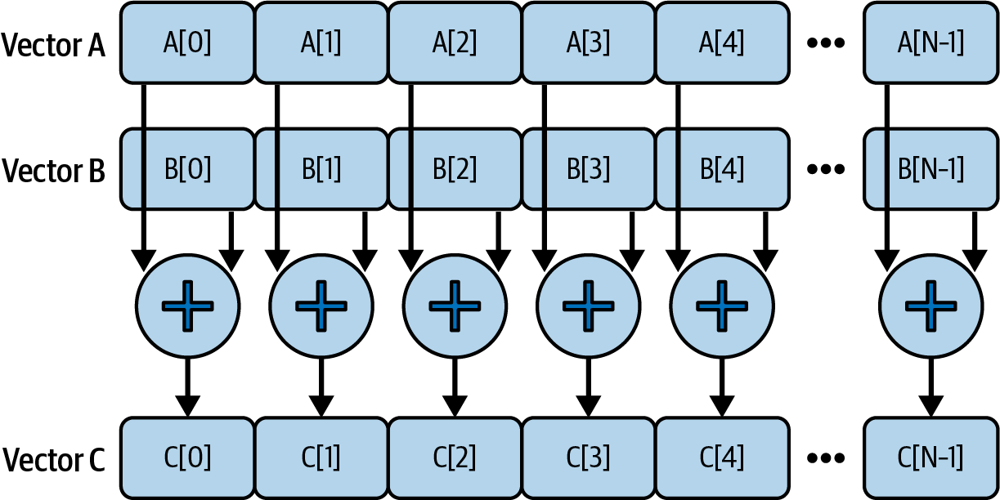
下面的 CUDA C++ code 启动足够 thread 覆盖所有元素（<<< (N+255)/256, 256 >>>），每 block 256 个 thread，并以 ceiling division 计算 block 数，从而并行处理 N 个元素。bounds check 处理最后一个不完整 block；大规模输入仍需注意 integer overflow 与 grid limit：
#include<cuda_runtime.h>constintN=1'000'000;// One thread per element__global__voidaddParallel(constfloat*__restrict__A,constfloat*__restrict__B,float*__restrict__C,intN){intidx=blockIdx.x*blockDim.x+threadIdx.x;if(idx<N){C[idx]=A[idx]+B[idx];}}intmain(){// Allocate and initialize host (pinned for faster DMA)float*h_A=nullptr;float*h_B=nullptr;float*h_C=nullptr;cudaMallocHost(&h_A,N*sizeof(float));cudaMallocHost(&h_B,N*sizeof(float));cudaMallocHost(&h_C,N*sizeof(float));for(inti=0;i*lt;N;++i){h_A[i]=float(i);h_B[i]=float(2*i);}// Create a non-blocking stream and allocate device bufferscudaStream_ts;cudaStreamCreateWithFlags(&s,cudaStreamNonBlocking);float*d_A=nullptr,*d_B=nullptr,*d_C=nullptr;cudaMallocAsync(&d_A,N*sizeof(float),s);cudaMallocAsync(&d_B,N*sizeof(float),s);cudaMallocAsync(&d_C,N*sizeof(float),s);// Async HtoD copies on the same streamcudaMemcpyAsync(d_A,h_A,N*sizeof(float),cudaMemcpyHostToDevice,s);cudaMemcpyAsync(d_B,h_B,N*sizeof(float),cudaMemcpyHostToDevice,s);// Launch (same stream)intthreads=256;intblocks=(N+threads-1)/threads;addParallel<<<blocks,threads,0,s>>>(d_A,d_B,d_C,N);// Async DtoH copy and stream synccudaMemcpyAsync(h_C,d_C,N*sizeof(float),cudaMemcpyDeviceToHost,s);cudaStreamSynchronize(s);// Cleanup (stream-ordered free)cudaFreeAsync(d_A,s);cudaFreeAsync(d_B,s);cudaFreeAsync(d_C,s);cudaStreamDestroy(s);cudaFreeHost(h_A);cudaFreeHost(h_B);cudaFreeHost(h_C);return0;}
当 N 足够大时，并行版本可利用更多 GPU resource。PyTorch 的 vectorized expression（A + B）通常会发起面向整个 tensor 的 GPU operation，让 backend 选择类似前述 addParallel 的并行 kernel；在 eager mode 下该 expression 通常对应一个 elementwise kernel，但 compilation/fusion/backend 可能改变实际 launch。下面是并行版本：
# add_parallel.pyimporttorchN=1_000_000A=torch.arange(N,dtype=torch.float32,device='cuda')B=2*Atorch.cuda.synchronize()# Proper parallel approach using vectorized operation# Launches a single GPU kernel that adds all elements in parallelC=A+Btorch.cuda.synchronize()
在 PyTorch 中，优先使用 vectorized tensor operation、library primitive 或 compiler-generated fusion，通常能减少 Python/dispatch/launch overhead 并采用成熟 kernel。Python loop 不一定使 device operation 完全串行，因为 launch 可异步排队，但大量细粒度 operation 往往降低 efficiency。不存在“几乎总有”完全匹配的最优 native implementation；仍应检查 semantics、fusion、layout、temporary allocation 和 profiler timeline。
可使用 Nsight Systems 与 Nsight Compute比较 sequential 与 parallel implementation 的 timeline、kernel duration、active warp 和 execution efficiency。下面给出原书的 Nsight Systems（nsys）与 Nsight Compute（ncu）命令；metric availability/name 依工具与 architecture version，命令本身也未显式收集表 6-6 的全部指标：
# Sequential addnsysprofile\--stats=true\-tcuda,nvtx\-osequential_nsys_report\./add_sequential.pyncu\--sectionSpeedOfLight\--metricssm__warps_active.avg.pct_of_peak_sustained_active,gpu__time_duration.avg\--target-processesall\---summaryper-gpu\-osequential_ncu_report\./add_sequential.py# Parallel addnsysprofile\--stats=true\-tcuda,nvtx\-oparallel_nsys_report\./add_parallel.pyncu\--sectionSpeedOfLight\--metricssm__warps_active.avg.pct_of_peak_sustained_active\--target-processesall\---summaryper-gpu\-oparallel_ncu_report\./add_parallel.py
nsys 用于观察 CPU/CUDA timeline、launch、copy、dependency 与 idle interval；仅凭 timeline 不能断言 GPU 是“starved”还是某一具体瓶颈。ncu 收集 per-kernel hardware counter，用于分析 occupancy、warp state、memory/execution throughput 等原因。两者需结合 workload context 与 metric definition 解读。
只运行 nsys 可能看不到细粒度 per-kernel counter；只运行 ncu 则可能缺少端到端 launch/data/dependency context，而且 replay 会扰动 timing。表 6-6 保留原书示例结果，但缺少 GPU、软件版本、warm-up、重复次数和完整 metric command，不能视为可跨系统复现的 benchmark。
| 指标 | add_sequential |
add_parallel |
|---|---|---|
| 内核执行时间（ms） | 48.21 | 2.17 |
| GPU utilization（原书口径未定义） | 1.5% | 95% |
| 达到的占用率 | 1.3% | 38.7% |
| warp 执行效率 | 3.1% | 100% |
不同工具和版本的 metric 名称、分母与时间窗口不同。Nsight Systems timeline-derived GPU activity、Nsight Compute per-kernel SM Active、active-warps occupancy 和 warp execution efficiency 衡量的是不同对象，不能互换，也不能都解释成“SM 被 active warp 占满的程度”。报告结果时必须给出精确 metric 名称与采样范围。
按表中原书数据，从 single-thread implementation 改为 multiwarp implementation 后，achieved occupancy 由 1.3% 升至约 38.7%，duration 从 48.21 ms 降至 2.17 ms，算术比值约为 22.2×。加速来自大量 parallelism、lane utilization、memory-level parallelism 和每 thread 工作量变化，不能只归因于 occupancy。
sequential case 只有一个 block/warp，且仅一个 lane 执行 loop，因此 device coverage 和 active-lane ratio 都很低。parallel case 可让更多 SM/warp 处理不同元素，表中 warp execution efficiency 从 3.1% 变为 100% 与 1/32 lane 到完整 warp 的理想算术一致；但表中的 1.5%/95% “GPU utilization”缺少 metric definition，不能由 occupancy 或 active lane 直接推出。
该极端示例说明 throughput-oriented GPU 需要足够 parallel work；所需 thread/block 数依 GPU size、kernel duration、resource usage 和 workload，不能只用“越多越好”概括其 目标。
GPU 由 CPU/runtime 发起 kernel，并通过不同 memory space/cache 访问数据。host launch、instruction dependency 和 memory access 等 latency 只有在存在可独立推进的工作且资源允许时才能 overlap/hide；有些 bandwidth 或 serialization bottleneck 不能靠增加 warp 消除。
kernel 提供足够 independent warp 后，hardware scheduler 可在 ready warp 之间发射 memory/math instruction，从而覆盖部分等待时间。source code 并不直接“指示 GPU interleave”，实际行为由 dependency、scheduler 和 pipeline availability 决定。
multiwarp parallel kernel 可受益于 warp-level latency hiding：一个 warp 等待 load dependency 时，另一个 ready warp 可发射 add 或其他 load。是否并行发生以及能隐藏多少 latency 取决于 execution/memory pipeline、cache 和 bandwidth；后续章节将继续讨论。
sequential kernel 没有其他 warp 可在 dependency stall 时运行，因此大量 SM 完全空闲，唯一 active warp 的 pipeline 也可能出现等待。parallel version 提供更多可调度工作，但不保证 GPU 持续 busy；图 6-20 是概念性 timeline 对比，并非 profiler trace。
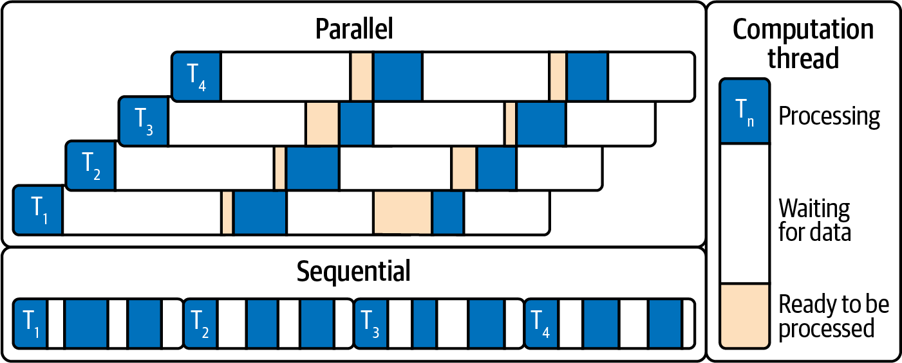
图中 sequential timeline 在 memory wait 期间出现 idle gap；parallel timeline 用其他 warp 的工作覆盖部分 gap。真实 kernel 仍可能受 bandwidth、dependency、barrier、tail effect 或资源竞争限制，因此不会必然连续 busy。
关键是先提供足够 parallel work 覆盖目标 device，再确认是否存在 latency-hiding shortage。足够 occupancy 可以减少部分 idle stall，但不保证最大 throughput；本例原书报告约 95% 的未定义 GPU-utilization metric，应只视为该测试结果。
有足够 thread 后，还应优化 active-lane efficiency、instruction-level parallelism、memory access 和 per-thread work。即使 occupancy 为 100%，kernel 仍可能受 memory bandwidth/latency、execution pipeline、dependency 或 synchronization 限制；memory-bound 也不只是“memory 很慢”，而是当前 arithmetic intensity 下性能受 memory subsystem 上界约束。
LLM 的 token-by-token decode 常见于低 arithmetic-intensity、memory-bandwidth-sensitive 场景，尤其 batch 较小时。执行各 layer 时会从 HBM/cache 读取 weight、KV cache 和 activation，并通过 register/shared-memory 等片上路径参与计算；不是把整套 model weight 一次性搬进 register/shared memory。
若模型有数千亿 parameter，按每 parameter 8 bit 粗略计算，weight storage 可达数百 GB；实际 footprint 还包括 scale/metadata、KV cache、activation 和并行分片。每 token 读取多少 byte 取决于 quantization、batch、cache、parallelism 和 kernel fusion，并非每次都把整个模型“移入移出 GPU”，但 repeated HBM reads 足以成为 bandwidth bottleneck。
仅增加 thread 数有时无效，尤其当每 thread/block 使用大量 register 或 shared memory 时。CUDA kernel annotation __launch_bounds__ 可向 compiler 提供预期 launch constraint，使其据此权衡 register allocation 与 code generation；它并不直接“优化 occupancy”。
该 annotation 的前两个参数分别是：应用承诺的 maximum threads per block，以及希望 compiler 在资源预算中支持的 minimum blocks per multiprocessor。第一个是 launch contract，超过它启动 kernel 会失败；第二个用于推导 register-use upper bound，但不保证 runtime 实际驻留该数量，因为 shared memory、block limit 和 grid size 等仍可能限制。示例如下：
__global____launch_bounds__(256,16)voidmyKernel(...){/* ... */}
__launch_bounds__(256, 16) 承诺该 kernel 每 block 不超过 256 个 thread，并要求 compiler 尝试按每 SM 至少 16 个 block 的目标约束 register usage。16 × 256 = 4,096 个 thread，超过原书所述目标 GPU 每 SM 2,048-thread limit，因此第二个参数在该 target 上不可实现；它不是让 compiler“分配足够 register 和 inline function”来突破硬件上限。
原书以许多现代 NVIDIA GPU（包括所述 Blackwell target）的每 block 1,024 thread、每 SM 2,048 resident thread 为例；实际 limit 应由目标 compute capability/device attribute 确认。
对于每 SM 最多 2,048 thread 的 target，仅按 thread limit 计算最多驻留 8 个 256-thread block；其他资源可能进一步降低数量。compiler/ptxas 不会把 16 自动“缩减为 8”并继续保留等价 request，而可能警告该 minimum-CTA constraint 超出范围并忽略相应 directive。
原书给出的 warning 类似：“ptxas warning: Value of threads per SM…is out of range. .minnctapersm will be ignored.” 具体文字和行为依 Toolkit/target；build system 不应忽略 ptxas warning。
__launch_bounds__ 会影响 compiler 推导的 register-use threshold。为满足 minimum-block target，compiler 可能降低 register use，从而提高潜在 residency，也可能增加 instruction count 或 spill；在某些情况下 compiler 还可能提高 register use 到不降低目标 residency 的上限，以减少指令。unrolling/inlining 变化是优化结果，不是 annotation 的固定语义，因此不保证更一致的 warp throughput。
提高 occupancy 必须与 per-thread resource 权衡。spill 是 compiler 因 register pressure/constraint 把 value 放入 local memory 的结果，不是运行时“thread 太多而耗尽 register”。减少 register 可提高 residency，也可能增加 local-memory traffic 或 recomputation。
CUDA Occupancy API 可在 host 侧根据目标 device 和 kernel resource metadata 估算 launch configuration。例如，cudaOccupancyMaxPotentialBlockSize() 搜索潜在 occupancy 较高的 block size，并考虑 register、static/dynamic shared memory 与 block limit。cudaOccupancyMaxPotentialBlockSize 是静态 occupancy calculator，不执行 kernel、不测量时间，也不是 performance autotuner：
intminGridSize=0,bestBlockSize=0;// If your kernel uses dynamic shared memory (extern __shared__),// set this correctly:size_tdynSmemBytes=/* bytes per block (e.g., tiles * sizeof(T)) */0;cudaOccupancyMaxPotentialBlockSize(&minGridSize,&bestBlockSize,myKernel,dynSmemBytes,// must match your kernel's dynamic shared memory use/* blockSizeLimit = */0);// Compute a grid that covers N, but don't go below the min grid// that saturates occupancyintgridSize=std::max(minGridSize,(N+bestBlockSize-1)/bestBlockSize);myKernel<<<gridSize,bestBlockSize,dynSmemBytes>>>(...);
API 返回候选 bestBlockSize 和达到该潜在 occupancy 所需的 minimum grid size。minGridSize 不是覆盖长度 N 的正确性 grid，也不保证运行时“saturate”任何 utilization metric。示例使用 gridSize = max(minGridSize, ceil_div(N, bestBlockSize)) 时会在小 N 下启动额外 thread，kernel 必须有 bounds check 或 grid-stride loop；还要处理 N=0、integer overflow 和 grid limit。若使用 extern __shared__，必须传入与 block size 对应的真实 dynamic-shared-memory function/value，而不是错误常量。
应对 Occupancy API 候选及相邻合法 block size 进行 warm-up 和重复计时，并检查 correctness。register pressure、instruction count、shared memory、cache、memory coalescing 和 problem shape 都可能让 sub-maximal occupancy 更快；“±1–2”应理解为相邻 warp-multiple candidate，而不是任意增减 1 个 thread。
compiler heuristic 通常是起点，__launch_bounds__ 和 occupancy calculator 可表达 constraint/提供候选，但不是对 runtime occupancy 的显式控制。只有在 compiler report 与 profiler 证明 resource-limited residency 位于关键路径，并且 kernel 能安全权衡 per-thread resource 时才应使用；否则可能损害性能或限制可用 block size。
CUDA kernel 可启动大量 thread，memory bug、race 和 synchronization error 往往具有 timing-dependent behavior，普通 debugger/test 不易覆盖。CUDA Toolkit 中的 NVIDIA Compute Sanitizer 通过 runtime instrumentation 和相应检查器报告一部分 correctness error。它能提高缺陷发现率，但会显著增加运行开销，也不能证明未报告的程序完全正确或可靠。
可通过 compute-sanitizer CLI 启动工具，并结合 NVIDIA Tools Extension（NVTX）annotation 改善报告上下文。是否应广泛插入 NVTX 取决于可观测性需求和 annotation overhead；它不会替代 sanitizer coverage。CLI 通常使用 --option value，可用 --error-exitcode 让发现 error 的进程返回指定非零状态。--kernel-name、--kernel-name-exclude 等 filter 可缩小 instrumented kernel 范围；--nvtx yes 启用 NVTX 相关支持，但具体 filtering/leak-report behavior 依 Compute Sanitizer version/tool，应查当前 CLI 文档：
compute-sanitizer[--tooltoolname][options]<application>[app_args]
可把 Compute Sanitizer 纳入 CI 的代表性小规模 GPU test，并用 --error-exitcode 使报告 error 时任务失败。kernel filter 和 NVTX 可控制成本/上下文，但过滤过窄会漏掉跨 kernel/lifecycle 问题；还需固定 CUDA/tool version、保存日志并设置合理 timeout。
Compute Sanitizer 包含四个主要 tool：memcheck、racecheck、initcheck 和 synccheck。它们分别覆盖不同类型的 memory access、shared-memory hazard、未初始化 global-memory read 和 synchronization misuse，覆盖范围不能由名称无限外推：
memcheck 可精确检测/归因许多 global、local 和 shared-memory 的 out-of-bounds 或 misaligned access，报告 GPU hardware exception，并检查部分 device-side allocation leak。支持项与默认值依版本；例如可用 --check-device-heap 控制 device heap checking。它不能检测所有逻辑越界、host race 或未覆盖 execution path。
racecheck 主要报告 shared-memory access hazard，包括 Write-After-Write、Write-After-Read 与 Read-After-Write，并分析相应 warp/block synchronization pattern。它不是通用 global-memory data-race detector；hazard report 也要结合 programming model 判断 severity。Volta 及后续 independent thread scheduling 下，过去依赖 implicit warp lockstep 的代码尤其需要显式合适同步。
initcheck 检测对未初始化 device global memory 的读取，例如遗漏 host-to-device initialization 或某些 device write path。它不检查所有 memory space/逻辑初始化条件，通常应先运行 memcheck，避免 invalid access 干扰 initialization analysis。
synccheck 检测一部分 synchronization primitive misuse，例如 divergent/mismatched barrier、无效 barrier argument 或 warp-level synchronization mask 问题，具体能力依 architecture/tool version。它不是完整的 deadlock detector，也不会证明所有 thread ordering、memory fence 和 application state 都正确。
总之，NVIDIA Compute Sanitizer 能帮助发现 CUDA application 中一部分 memory、shared-memory race、initialization 和 synchronization bug。将其用于有代表性的 CI/test workload，可更早发现回归；仍应结合 unit/property test、error checking、compiler warning、debug build 和真实并发场景，因为 sanitizer clean run 既不证明完整 correctness，也不证明 production performance。
Roofline 模型是一种实用的可视化方法，它刻画两类硬件性能上限：处理器峰值浮点运算率形成的水平线，以及由峰值内存带宽决定的斜线。两者共同构成“屋顶线”包络，可用来判断给定 kernel 在该模型及所选度量口径下更接近计算受限（compute bound）还是数据移动受限（memory bound）。
两条线的交点称为山脊点（ridge point），它对应算术强度阈值：在基础 Roofline 模型中，山脊点左侧受内存带宽上限约束，右侧受计算上限约束。算术强度是执行的 FLOP 数与某一内存层级传输字节数之比。这里采用 GPU 与片外 HBM/global memory 之间的数据流量作为字节口径；若改用 L1、L2 或算法层面的流量，所得强度和对应 roof 也会不同。
来看一个简单示例。假设某个 kernel 读入两个 32 位浮点数（共 8 字节），执行一次加法（1 FLOP），再写回一个 32 位浮点结果（4 字节）。若这 12 字节都形成片外流量，则算法以 12 字节内存流量完成 1 FLOP，算术强度为 0.083 FLOP/byte（1 FLOP / 12 byte ≈ 0.083 FLOP/byte）。缓存命中、write allocation、合并访问和实际事务粒度会使测得流量偏离这个简化估算。
再将其与 10 FLOP/byte 的 GPU 山脊点比较（约 80 TFLOP/s ÷ 8 TB/s = 10 FLOP/byte）。示例 kernel 的算术强度为 0.083 FLOP/byte，位于 roofline 左侧的内存受限区域，比该阈值低 100 倍以上，因而无法仅靠增加计算单元就达到计算峰值。在这个简化模型中，其性能上限主要由内存流量决定。图 6-21给出了 Blackwell 级 GPU 的示意性 Roofline：水平线表示约 80 TFLOP/s 的 FP32 计算上限，斜线对应 8 TB/s 的 HBM 带宽上限。
山脊点应由同一测量口径下的计算吞吐上限除以内存带宽上限得到；采用理论峰值或持续实测值都可以，但不能混用。图中的两个示意上限相除得到 10 FLOP/byte。示例 kernel 位于斜向内存带宽 roof 上的 0.083 FLOP/byte 处，因此 Roofline 模型将其归入内存带宽受限区域。
要减轻这种内存受限程度，可以通过数据复用、算子融合或减少不必要的数据移动，让每传输一个字节完成更多有效运算，使工作点向右移动并接近计算 roof。不过，单纯增加无用 FLOP 并不会改善实际性能；优化目标应是提高有用计算与必要流量之比。
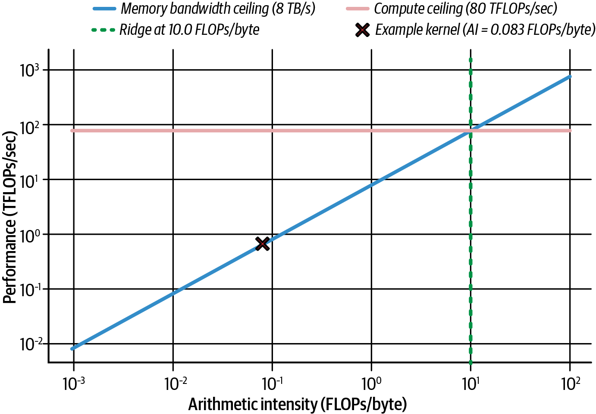
降低数据精度是减少字节流量的一种方法。例如，在运算次数和访存次数不变、且没有额外转换或元数据开销时，以 16 位浮点数（FP16）替代 32 位浮点数（FP32），每个值的传输字节数减半，FLOP/byte 算术强度可相应翻倍。
现代 GPU 还提供面向 8 位浮点（FP8）的 Tensor Core。Blackwell 又为特定 AI 工作负载引入原生 4 位浮点（FP4）Tensor Core 支持。较窄的数据格式可以继续减少每个值的字节数，但实际收益取决于算子是否使用相应 Tensor Core 路径、量化尺度与元数据开销，以及精度要求。
例如，FP8 每个裸数据值占 1 字节，相比 FP16 可将值存储量减半；FP4 每个裸值占半字节，可用于部分推理工作负载。不能仅由位宽断言计算吞吐必然翻倍，因为不同精度的峰值、指令形态、累加精度、稀疏性口径和实际 kernel 效率各不相同。
若忽略对齐、打包和元数据开销，一次 128 字节内存传输可容纳 32 个 FP32、64 个 FP16、128 个 FP8 或 256 个 FP4 值。Blackwell 还提供针对压缩模型权重的数据解压机制，可在数据送入 Tensor Core 路径时进行硬件辅助解压。若权重在 HBM 中以受支持的压缩格式存储，读取的物理字节数可能减少，从而提高该权重流的有效带宽；具体格式和路径必须以相应 GPU、CUDA 与算子文档为准。
因此，Blackwell 对 transformer token generation 等经常受权重读取限制的工作负载具有潜在优势。权重可以采用低位宽格式存储，在加载与计算路径中解码，并以适当精度进行乘加或累加。不过，“4 位或 2 位权重自动由硬件解压并统一转换为 FP16/FP32”并不是所有 kernel 的通用行为。低精度只有在软件栈选中受支持路径且模型质量可接受时，才会减少数据移动并提高有效吞吐。
对于内存受限工作负载，优化方向通常是减少必要的数据传输或提高数据复用，使有效工作点向右、向更高性能区域移动。目标不一定是把 kernel 变成计算受限，而是在精度、延迟和资源约束下缩短实际执行时间。
Transformer 模型（如 LLM）在不同阶段可能分别表现为计算受限或内存受限。prefill 通常具有较大的矩阵维度和较高并行度，许多 GEMM 更容易接近计算受限；逐 token decode 的小批量矩阵运算则常受权重或 KV cache 带宽、kernel launch 与延迟限制。但这不是按“attention 与矩阵乘法”划分的固定结论，实际边界随 batch size、sequence length、并行策略、量化和硬件而变化。第 15–18 章将在深入讨论推理时进一步说明。
内存带宽受限 kernel 常表现为较高的 DRAM 吞吐利用率和较低的计算管线利用率，但不能仅凭这一组合断言所有 warp 都在等待内存。低计算利用率还可能来自指令依赖、低 occupancy、分支、同步或 launch 配置；延迟受限 kernel 也可能尚未打满 DRAM 带宽。
要进一步定位原因，可使用 Nsight Compute 查看单个 kernel 的吞吐、cache hit rate、warp issue stall reason 和源代码级指标。不同版本支持的 replay、source correlation 和 launch 相关指标有所差异，应以当前版本文档和采集权限为准。这些信息有助于区分内存依赖、寄存器压力和 launch 配置等影响。
随后可用 Nsight Systems 从全局时间线观察 GPU 空闲区间、CPU 工作重叠以及 PCIe/NVLink 活动。两者结合，可以同时回答为什么某个 kernel 受限，以及这些事件在应用整体执行中何时发生。
关键是迭代进行性能分析，结合 Nsight Compute 与 Nsight Systems 的指标定位内存热点。可以在可疑代码周围添加 NVTX range，放大检查时间线，再依据测量反馈进行优化。
例如，可用 NVTX 将区域标记为“memory copy”或“kernel execution”，并在 Nsight Systems 时间线中观察它们。这有助于确认前文所述的主机与设备传输是否真正和计算重叠。
要验证重叠，可以为数据传输和 kernel 调用相关的主机代码添加 NVTX range。Nsight Systems 会显示这些 range 以及关联的 CUDA 活动，但 NVTX range 本身通常表示主机 API 区间，并不等同于设备操作的精确起止时间。使用异步内存复制（cudaMemcpyAsync）只是实现重叠的必要条件之一；是否能与 GPU kernel 执行重叠，还取决于 stream、依赖关系、页锁定主机内存、copy engine、传输方向和硬件并发能力。图 6-22对比了同步传输与可能发生重叠的异步内存传输。
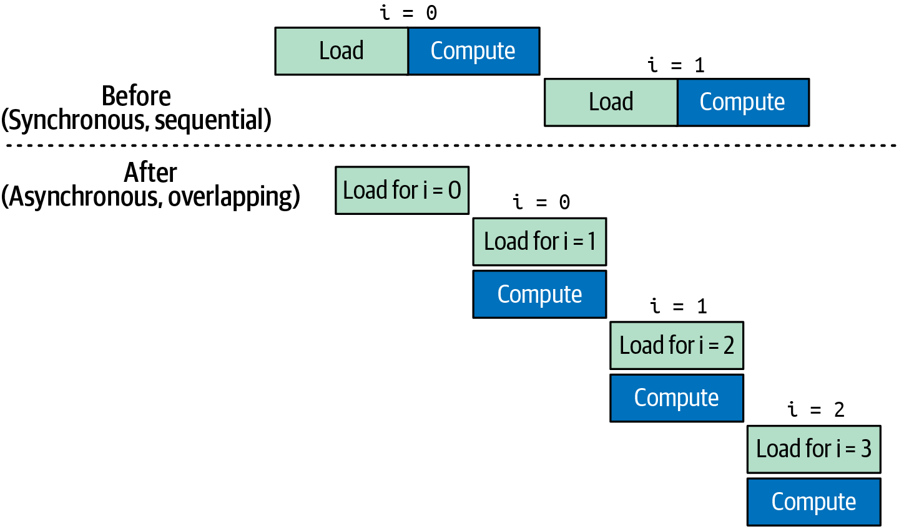
如果预期发生重叠，但时间线中复制与 kernel 仍然串行，应检查意外的 default-stream synchronization、事件依赖、API 的同步语义、是否使用不同的 non-default stream、主机缓冲区是否为 pinned memory，以及设备能否并发执行相应 copy 与 kernel。不能只凭串行现象锁定某一个原因。
对于涉及普通 pageable host memory 的主机与设备传输，cudaMemcpyAsync 可能需要内部 staging 或产生同步行为，不能依赖其与 kernel 稳定重叠。要获得可预期的异步 H2D/D2H 行为，通常应使用 pinned（page-locked）host memory；此外仍须满足 stream、依赖关系与硬件并发条件。
怀疑 kernel 供数不足时，可以先用 Nsight Compute 分析 kernel，再用 Nsight Systems 检查端到端时间线。global load efficiency 较低通常表示线程请求的有效字节与实际传输字节之比较低，即访问未充分合并或存在浪费；它并不直接表示 DRAM 响应速度不足。Nsight Systems 中 kernel 之间的空档也可能来自主机 launch、同步、I/O 或依赖，需结合 CUDA API 与传输轨迹判断。
应用本章的内存层次结构优化后，应重新测量相关指标。成功的优化可能减少时间线空档、提高有效带宽或缩短 kernel 时间，但 memory pipe 利用率并非越接近峰值越好：若用更少流量完成同样工作，利用率可能下降而性能反而提高。最终应以正确性、端到端延迟和吞吐量为判断依据。
本章介绍了如何选择 launch parameter、权衡 occupancy，如何异步管理 GPU memory，以及如何运用 Roofline 分析判断 kernel 更接近计算受限还是内存受限。下面回顾几个关键要点：
GPU 采用单指令多线程（SIMT）模型，以 warp（32 个 thread）为调度单位发射指令。同一 warp 的活跃 thread 执行同一条指令，但分支可能使不同路径分阶段执行。保持足够多的 resident warp 有助于隐藏 memory 与 pipeline latency；所需 occupancy 取决于 kernel 的依赖关系和资源使用，并非越高越好。
thread 组成 thread block（每个 block 最多 1,024 个 thread），thread block 再组成 grid，使同一 kernel 可扩展到大量 thread。同步机制（如 __syncthreads() 或 cooperative groups）可协调 shared memory 中的数据复用，但会引入等待和约束；应在正确性所需的范围内减少不必要的 barrier。
block size 通常选择 32 的倍数，以免最后一个 warp 未满，但最终值仍需结合访存、并行度和资源使用进行测量。还要注意每个 SM 的架构与型号限制。原文列出的 Blackwell 示例上限包括每个 thread 255 个 register、每个 SM 228 KB shared memory、64 个 resident warp 和 32 个 resident thread block；具体可用 shared memory 与驻留限制应以目标 GPU 的 compute capability、配置和 CUDA 文档为准。
对于简单的一维 element-wise kernel，可将 threadsPerBlock = 256（8 个 warp）作为起始测试点，并以 blocksPerGrid = (N + threadsPerBlock – 1) / threadsPerBlock 覆盖全部元素。这不是通用最优值，应依据性能分析结果调整，包括 register 使用与 spilling、shared-memory 占用、achieved occupancy、访存效率和执行时间。
在适合 stream-ordered allocation 的场景中，可使用 cudaMallocAsync/cudaFreeAsync 和 CUDA memory pool，减少传统分配路径可能引起的 device-wide synchronization 与重复底层分配开销；不要求把它们固定放在某个“专用 stream”，但必须正确表达对象生命周期与跨 stream 依赖。PyTorch caching allocator 采用类似的复用思路来提高 tensor 分配效率，减少昂贵的 cudaMalloc() 和 cudaFree() 调用，具体 backend 与行为随配置和版本而异。
register → L1/shared memory → L2 → global memory（HBM3e）→ host memory：不同层级在容量、延迟、带宽、作用域和可编程性之间存在权衡。应在资源约束允许时提高 register、shared memory 与 cache 中的数据复用，但过多占用 register 或 shared memory 也可能降低并发度。
CUDA Managed Memory（Unified Memory）可以简化编程，但访问模式不佳时可能触发 page fault、migration 或远程访问。可依据目标架构和访问阶段测试 cudaMemPrefetchAsync 与 memory advice；它们是放置提示和迁移工具，并不能保证消除所有意外停顿。
算术强度（FLOP/byte）与所选计算、内存 bandwidth roof 共同决定 kernel 在 Roofline 模型中的上限区域。FP16、FP8、FP4 或受支持的硬件解压路径可能减少数据字节数，但收益取决于精度、数据复用、元数据和实际指令路径。应结合 Nsight Compute 的单 kernel 指标与 Nsight Systems 时间线判断真正瓶颈。Blackwell 的 TMEM 为 Tensor Core 累加结果提供专用片上存储，UMMA 配合低精度数据路径可能减少部分 register/shared-memory traffic 或改善 pipeline，但不能笼统保证把 memory-bound kernel 转为 compute-bound。第 10 章将进一步讨论 UMMA。
本章梳理了 GPU 的 SIMT 模型、thread 层次结构与多级内存系统，为高性能 CUDA 开发奠定基础。Occupancy 通常指 active warp 数相对于该 kernel 在目标 SM 上可达到的最大 resident warp 数之比，是隐藏延迟的重要因素之一；工具中 theoretical 与 achieved occupancy 的具体定义还需结合指标说明。
不过，最大化 occupancy 并不保证在所有场景中获得最佳性能。如果 thread 具有足够的指令级并行性（ILP），或者瓶颈位于其他资源，中等乃至较低 occupancy 也可能实现很高吞吐。
较高 occupancy 有助于隐藏延迟，但降低 active thread/block 数有时能让每个 thread 使用更多 register，减少 spilling，或允许更大的 tile，从而提高吞吐。这里释放的是每个 SM 的资源预算，使 resident block/thread 在不同配置间重新权衡，并不是“为其他 thread 免费增加 register”。应针对目标工作负载和硬件基准测试不同配置，寻找实际最优点。
掌握这些基础知识和性能分析方法后，就可以进一步开展有针对性的优化，例如减少 warp divergence、利用 GPU memory hierarchy，以及异步预取数据。后续还会深入介绍 TMA：它可以把受支持的 bulk tensor transfer 从 thread 的逐元素地址生成与搬运工作中分离出来，并与计算流水化；但数据传输仍占用相应内存与 copy 资源，实际 computational goodput 提升需要通过测量确认。